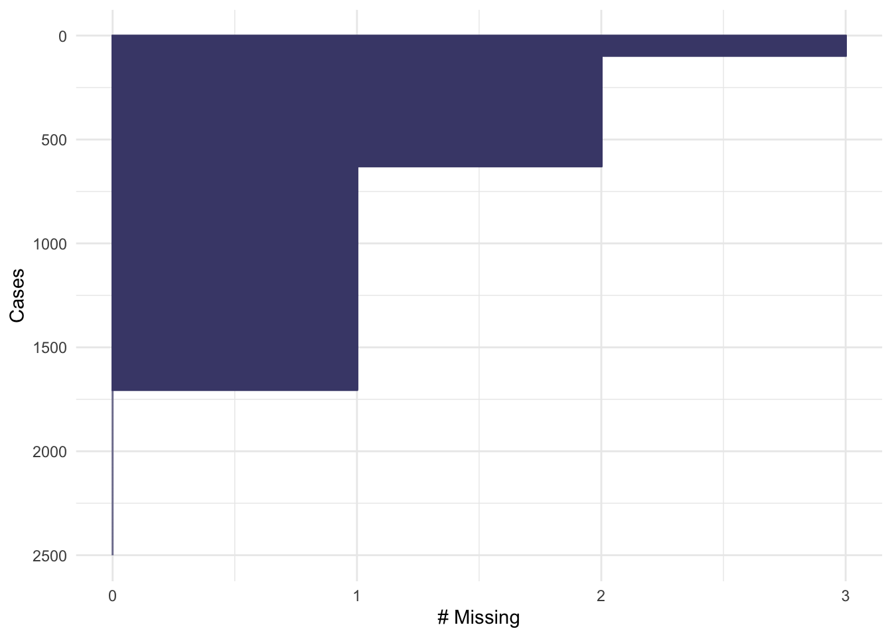
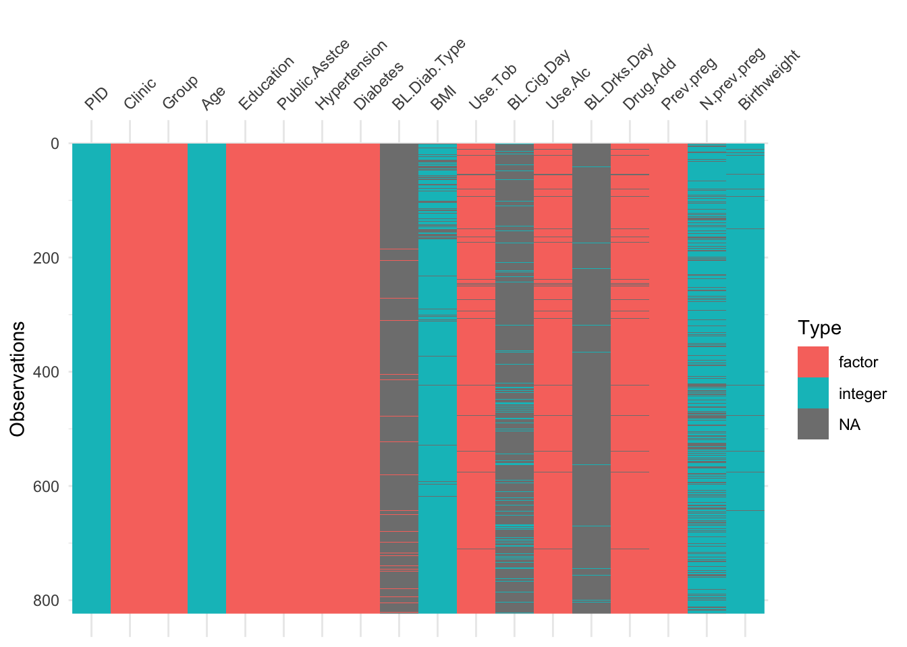
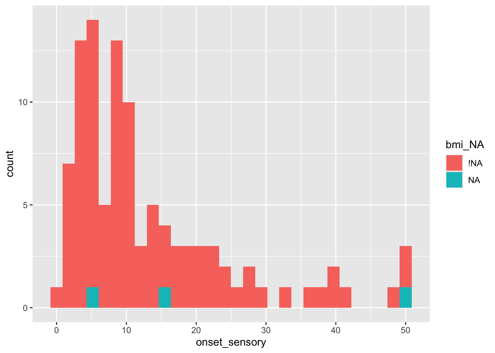
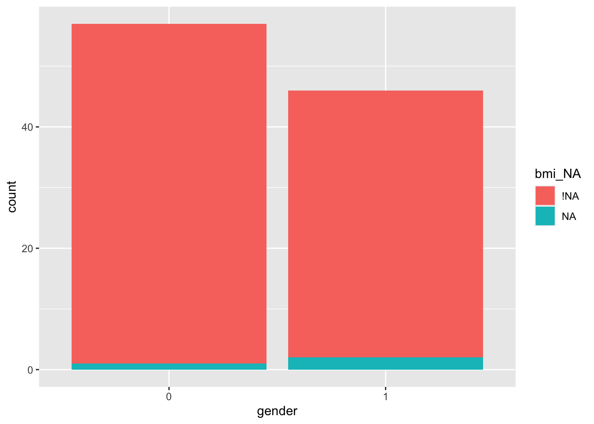
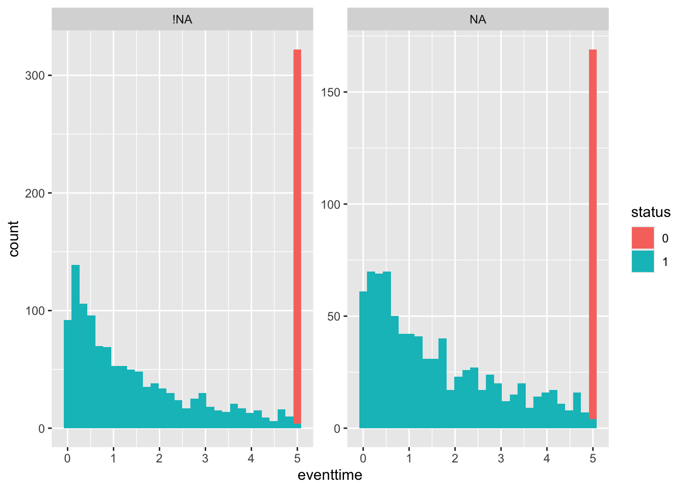
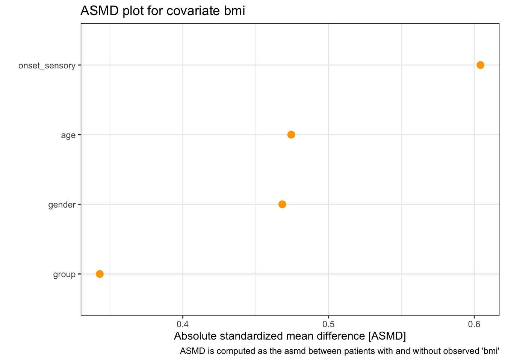
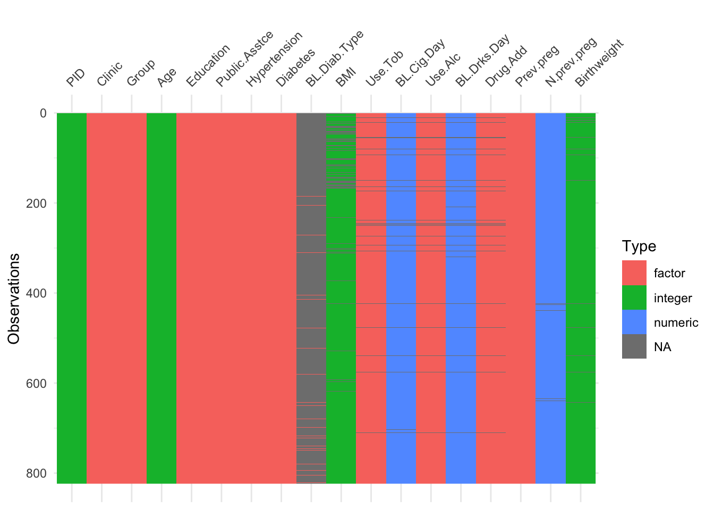

A Computer Practical 1 - Missing data
In this computer practical we focus on an important issue in clinical trials (and most real world projects!): missing data. There will be a bit more reading than in future practicals, to give you the necessary theory and background. We will only have time to skim the surface of working with missing data, but if you want to find out more, some good references are Little and Rubin (2019) and chapter 17 of Gelman, Hill, and Vehtari (2021).
Consider it a sort of informal formative assignment to finish this practical in your own time if you don’t in class. Or, at the very least, you might need to return to it while working on future assignments. For this reason, it would be sensible to keep track of everything you do in an .R file that you can return to in the future.
There will be a mixture of full solutions, examples of possible solutions and example code to adapt. If you’re not sure how to do something, please ask!
R practicalities
There are many, many packages in R that implement methods for designing and analysing clinical trials (see a list at CRAN task view). We will look at some of these, and will also write our own code for some tasks. Remember that to install a package, you can do
and to then load the package (it doesn’t load automatically on install) enter
If you have problems running R on your laptop, or on the university machines, the most foolproof way might be to use Github codespaces (thanks to Louis Aslett, who developed this for Data Science and Statistical Computing II). You may be familiar with this approach if you did Bayesian Computational Modelling III.
An advantage of this is that you can open the same codespace (the same instance of R) from any computer, so if you plan to work on things (for example your summative assignment, which will involve some R) from more than one computer, this might be ideal.
Codespace requires you to have a github account (you can sign up for free here) and there is a short guide to creating a github account here.
A.1 Missing data
In [almost] any real-world study or trial, there will be some missing data. This can happen for a whole host of reasons: perhaps some participants dropped out completely, or couldn’t make some appointments. Perhaps some data were lost or corrupted. Perhaps some participants decided not to provide certain details, or didn’t comply properly with the study.
Why does this matter? Or, why do we need to think properly about this? Well, a huge amount of work in the planning and design of an RCT goes into the random allocation: we want to eliminate all sources of bias (including those we can’t observe, or aren’t even aware of) by randomly balancing the participants between the trial arms. If some of these participants’ data are missing, we can no longer be confident that we still have this balance.
Dealing with missing data boils down to two main tasks:
- Understanding the pattern(s) of missingness
- Processing the data to mitigate against the effect of the missingness
so this is what we’ll be working on now. Before that though, we need some data to work with!
A.1.1 Datasets
The datasets we’ll work with come from the packages medicaldata and smdi, so you’ll need to install those if you don’t have them. We’ll also be using the packages naniar and visdat, which contain lots of methods for handling missing data, and rstanarm, which will enable us to easily sample from regression models. Other packages are available, as you can see from the CRAN task view on Missing Data. We’ll also use tidyverse for various plotting and data handling tasks.
require(medicaldata)
library(naniar)
library(smdi)
library(tidyverse)
library(visdat)
library(rstanarm)Throughout this practical we’ll work with three datasets.
A.1.1.1 Supraclavicular
The first dataset is the supraclavicular data. This is a fairly simple data set (at least in terms of missingness) which I’ll use to to demonstrate techniques before asking you to work on the more complex data!
Exercise A.1 Load the supraclavicular data.
- What is the study about?
- What is the primary outcome?
- What are the baseline covariates (remember these must be measured before allocation)
Create a data frame containing just the baseline covariates, the allocation and the primary outcome variable. Make sure these are of the correct type.
Click for solution
Solution. The details of the study can be found using ?supraclavicular.
The primary outcome variable is time to 4-nerve sensory block, which has the column name onset_sensory.
The baseline covariates are gender, BMI and age. To create our data frame, we need
A.1.1.2 Lung cancer dataset
This is the smdi_data dataset from the package smdi. The intervention group variable is exposure. The outcome data are survival (or ‘time-to-event’) data: in this study, the ‘event’ is death and the follow-up period is five (probably years, but it doesn’t say!). Some participants are still alive at the end of the follow-up period (so they have status=0) and the data are therefore right censored. We will learn more about this type of data later in the course.
For now, the only preparation to do is to convert status to a factor variable:
This is a synthetic (or possibly synthetically altered) dataset designed for use with missing data exploration, so we have the advantage that the help file tells about the missingness mechanisms (more on that soon).
A.1.1.3 Obstetrics and Periodontal Therapy
The final dataset we’ll work with is opt, which is about the treatment of maternal periodontal disease and its effect on birthweight and term.
Exercise A.2 Use ?opt to find out about this trial.
There are a lot of columns here, but we won’t keep all of them. Our dataset (for now) will be
which retains most of the baseline covariates, intervention group and outcome variable (birthweight). There is some ‘messiness’ in the data, for example for some variables missing values are recorded as "", rather than NA. We’ll sort that now by running the following command
A.2 Understanding the patterns of missingness
The first thing we’ll do is explore the data to find out what the pattern of missingness is. First of all, we can visualise which data are missing.
A.2.1 Visualising missingness
The function vis_dat (from visdat) gives an excellent first look at a dataset, colouring data by type (and missing data in grey). The default is to sort the columns by type, but you can see below that I’ve made it keep to the origianl order.

The functions gg_miss_var, gg_miss_case and gg_miss_upset (all from naniar) allow us to quickly see how much missing data there is, either by variable, by case or by intersection. Look at the help files to find out what the arguments do.
We see that in supraclavicular there are three missing entries for BMI, and all other variables are complete.

Plotting by cases shows that each of these missing data are associated with a different participant, so there are three participants with one missing item each.
## group gender age onset_sensory bmi
## 100 1 1 1 1 1 0
## 3 1 1 1 1 0 1
## 0 0 0 0 3 3Exercise A.3 Make these plots for the remaining datasets, smdi_data and opt_df. How does the missingness compare? Which plots do you find more useful and why?
Click for solution
Solution. Lung cancer
We see there is missingness for three variables:

The naniar functions can show us how this is spread across the variables and participants.

The function md.pattern shows us how many participants have each combination of missing data:

## exposure age_num female_cat smoking_cat physical_cat alk_cat histology_cat ses_cat
## 795 1 1 1 1 1 1 1 1
## 479 1 1 1 1 1 1 1 1
## 446 1 1 1 1 1 1 1 1
## 263 1 1 1 1 1 1 1 1
## 151 1 1 1 1 1 1 1 1
## 176 1 1 1 1 1 1 1 1
## 93 1 1 1 1 1 1 1 1
## 97 1 1 1 1 1 1 1 1
## 0 0 0 0 0 0 0 0
## copd_cat eventtime status pdl1_num ecog_cat egfr_cat
## 795 1 1 1 1 1 1 0
## 479 1 1 1 1 1 0 1
## 446 1 1 1 1 0 1 1
## 263 1 1 1 1 0 0 2
## 151 1 1 1 0 1 1 1
## 176 1 1 1 0 1 0 2
## 93 1 1 1 0 0 1 2
## 97 1 1 1 0 0 0 3
## 0 0 0 517 899 1015 2431Obstetrics and Periodontal Therapy
Using vis_dat we see that there is a lot of missing data in the opt dataset, and that some variables are particularly badly affected.

Now the naniar functions really do help us to understand what we’re dealing with!


Not many individual participants have more than about 25% of their data missing, but there are some variables that are missing for nearly all participants (more on this later).
A.2.2 Summary tables
We may also want to visualise or summarise missingness in a table, and there are various ways to do this, for example miss_case_summary, miss_var_summary and miss_var_summary.
Exercise A.4 Use the three table generating functions listed above on our datasets. Do they give you any new information compared to the plots?
Click for solution
Solution. Working through the list of functions (just for opt_df), we have:
## # A tibble: 823 × 3
## case n_miss pct_miss
## <int> <int> <dbl>
## 1 423 9 50
## 2 80 8 44.4
## 3 93 8 44.4
## 4 477 8 44.4
## 5 539 8 44.4
## 6 11 7 38.9
## 7 21 7 38.9
## 8 43 7 38.9
## 9 54 7 38.9
## 10 150 7 38.9
## # ℹ 813 more rowsThis shows how many variables (both in number and as a percentage of the total number of variables) are missing, for each case (in decreasing order of missingness).
## # A tibble: 9 × 3
## n_miss_in_case n_cases pct_cases
## <int> <int> <dbl>
## 1 1 7 0.851
## 2 2 87 10.6
## 3 3 462 56.1
## 4 4 224 27.2
## 5 5 17 2.07
## 6 6 12 1.46
## 7 7 9 1.09
## 8 8 4 0.486
## 9 9 1 0.122miss_case_table tabulates the number of cases with \(n\) missing variables, for \(n=1,\ldots\).
The remaining functions look at things from the point of view of variables:
## # A tibble: 18 × 3
## variable n_miss pct_miss
## <chr> <int> <num>
## 1 BL.Drks.Day 810 98.4
## 2 BL.Diab.Type 799 97.1
## 3 BL.Cig.Day 731 88.8
## 4 N.prev.preg 217 26.4
## 5 BMI 73 8.87
## 6 Use.Alc 27 3.28
## 7 Drug.Add 27 3.28
## 8 Use.Tob 26 3.16
## 9 Birthweight 14 1.70
## 10 PID 0 0
## 11 Clinic 0 0
## 12 Group 0 0
## 13 Age 0 0
## 14 Education 0 0
## 15 Public.Asstce 0 0
## 16 Hypertension 0 0
## 17 Diabetes 0 0
## 18 Prev.preg 0 0Now we see how many (and what percentage) of cases are missing for each variable.
There are many, many possible ways to visualise or tabulate missing data, and we have used but a few. If you want to find more, you can look in the help file for naniar, or indeed at another package designed for working with missing data.
A.2.3 Mechanisms of missingness
So far, things have been a bit ad-hoc. We may have noticed some patterns or trends, but we haven’t subjected these to any scrutiny, or used any statistical methodology to understand the missingness.
When working with missing data, it’s important to think about the mechanism that is causing some data to be missing. Is there some systematic reason why some variables are missing?
Broadly speaking, there are three types of missing data. These were first coined by Rubin (1976).
A.2.3.1 Missing completely at random (MCAR)
If data are MCAR, then the probability of missingness is the same for all units: missingness is statistically independent of all covariates (observed and unobserved), of the treatment and of the outcome. If each participant decided whether or not to provide a certain piece of information by rolling a dice (eg. 1 = don’t provide), then the resulting missingness would be MCAR.
This type of missingness is the simplest to deal with, because removing the missing units is unlikely to cause any bias. However, it’s extremely rare in real life, and it’s difficult to even think of an example where it would definitely hold!
A.2.3.2 Missing at random (MAR)
For data to be MAR, the probability of missingness must depend only on available information. In this case, we can use the available information to model the missingness.
MAR data are somewhat more common (or at least the mechanism is more commonly assumed than MCAR), and is thankfully still moderately simple to deal with. If missingness is ‘at random’, then adjusting for the relevant covariates in the analysis will avoid bias.
A.2.3.3 Missing not at random (MNAR)
This is the trickiest (and probably most common) mechanism, in which the missingness depends on unobserved data. It is likely then that the unobserved (and therefore unavailable) information also predicts the value that is missing, and possibly also the outcome.
For example, suppose that the treatment in a clinical trial causes some unwanted side effect, such as pain. In this case, a participant in the intervention group is more likely to drop out of the study than a participant in the control group. Unless we measure this side effect (for example, a pain score), the resulting missingness is not at random.
The most difficult case of MNAR is when the missingness depends on the (potentially missing) variable itself. For example, in a trial of a weight loss intervention, participants with greater weights might be more reticent to reveal them, especially if they feel the trial is going badly.
MNAR mechanisms can be [imperfectly] modelled, or else mitigated by including more covariates in the data, which brings the mechanism closer to MAR. It is vital to work with the subject experts, who will have a much better idea of the sorts of mechanisms that might be causing missingness in their study.
We can never prove which of these is the case, since by definition we don’t have the information we would need to establish that the mechanism is (or isn’t) MNAR. All we can do is study patterns in the data and find evidence one way or the other.
A.3 Exploring the relationship between missingness and other variables
In a clinical trial, ultimately what we care about is whether the missingness has changed our understanding of the outcome variable(s). This is most likely to happen if the missingness is related to the outcome variable. This could happen either directly, or because the missingness is correlated to a variable that affects the outcome.
Again, we will explore things visually before using some more rigorous methods. Now, instead of simply understanding how much missing data there is, and which variables and/or cases are involved, we want to look at the relationships between missingness and the values of the other variables.
In the package naniar you can create a copy of the data frame containing just NA and !NA, indexing exactly where the missing values are.
| group_NA | gender_NA | bmi_NA | age_NA | onset_sensory_NA |
|---|---|---|---|---|
| !NA | !NA | !NA | !NA | !NA |
| !NA | !NA | !NA | !NA | !NA |
| !NA | !NA | !NA | !NA | !NA |
| !NA | !NA | !NA | !NA | !NA |
| !NA | !NA | !NA | !NA | !NA |
| !NA | !NA | !NA | !NA | !NA |
| !NA | !NA | !NA | !NA | !NA |
| !NA | !NA | !NA | !NA | !NA |
| !NA | !NA | !NA | !NA | !NA |
| !NA | !NA | !NA | !NA | !NA |
| !NA | !NA | !NA | !NA | !NA |
| !NA | !NA | !NA | !NA | !NA |
| !NA | !NA | !NA | !NA | !NA |
| !NA | !NA | !NA | !NA | !NA |
| !NA | !NA | !NA | !NA | !NA |
| !NA | !NA | NA | !NA | !NA |
| !NA | !NA | !NA | !NA | !NA |
| !NA | !NA | !NA | !NA | !NA |
| !NA | !NA | !NA | !NA | !NA |
| !NA | !NA | !NA | !NA | !NA |
| !NA | !NA | !NA | !NA | !NA |
| !NA | !NA | !NA | !NA | !NA |
| !NA | !NA | !NA | !NA | !NA |
| !NA | !NA | !NA | !NA | !NA |
| !NA | !NA | !NA | !NA | !NA |
| !NA | !NA | !NA | !NA | !NA |
| !NA | !NA | !NA | !NA | !NA |
| !NA | !NA | !NA | !NA | !NA |
| !NA | !NA | !NA | !NA | !NA |
| !NA | !NA | !NA | !NA | !NA |
| !NA | !NA | !NA | !NA | !NA |
| !NA | !NA | !NA | !NA | !NA |
| !NA | !NA | !NA | !NA | !NA |
| !NA | !NA | !NA | !NA | !NA |
| !NA | !NA | !NA | !NA | !NA |
| !NA | !NA | !NA | !NA | !NA |
| !NA | !NA | !NA | !NA | !NA |
| !NA | !NA | !NA | !NA | !NA |
| !NA | !NA | !NA | !NA | !NA |
| !NA | !NA | !NA | !NA | !NA |
| !NA | !NA | !NA | !NA | !NA |
| !NA | !NA | !NA | !NA | !NA |
| !NA | !NA | !NA | !NA | !NA |
| !NA | !NA | !NA | !NA | !NA |
| !NA | !NA | !NA | !NA | !NA |
| !NA | !NA | !NA | !NA | !NA |
| !NA | !NA | !NA | !NA | !NA |
| !NA | !NA | !NA | !NA | !NA |
| !NA | !NA | !NA | !NA | !NA |
| !NA | !NA | !NA | !NA | !NA |
| !NA | !NA | !NA | !NA | !NA |
| !NA | !NA | !NA | !NA | !NA |
| !NA | !NA | !NA | !NA | !NA |
| !NA | !NA | !NA | !NA | !NA |
| !NA | !NA | NA | !NA | !NA |
| !NA | !NA | !NA | !NA | !NA |
| !NA | !NA | !NA | !NA | !NA |
| !NA | !NA | !NA | !NA | !NA |
| !NA | !NA | !NA | !NA | !NA |
| !NA | !NA | !NA | !NA | !NA |
| !NA | !NA | !NA | !NA | !NA |
| !NA | !NA | !NA | !NA | !NA |
| !NA | !NA | !NA | !NA | !NA |
| !NA | !NA | !NA | !NA | !NA |
| !NA | !NA | NA | !NA | !NA |
| !NA | !NA | !NA | !NA | !NA |
| !NA | !NA | !NA | !NA | !NA |
| !NA | !NA | !NA | !NA | !NA |
| !NA | !NA | !NA | !NA | !NA |
| !NA | !NA | !NA | !NA | !NA |
| !NA | !NA | !NA | !NA | !NA |
| !NA | !NA | !NA | !NA | !NA |
| !NA | !NA | !NA | !NA | !NA |
| !NA | !NA | !NA | !NA | !NA |
| !NA | !NA | !NA | !NA | !NA |
| !NA | !NA | !NA | !NA | !NA |
| !NA | !NA | !NA | !NA | !NA |
| !NA | !NA | !NA | !NA | !NA |
| !NA | !NA | !NA | !NA | !NA |
| !NA | !NA | !NA | !NA | !NA |
| !NA | !NA | !NA | !NA | !NA |
| !NA | !NA | !NA | !NA | !NA |
| !NA | !NA | !NA | !NA | !NA |
| !NA | !NA | !NA | !NA | !NA |
| !NA | !NA | !NA | !NA | !NA |
| !NA | !NA | !NA | !NA | !NA |
| !NA | !NA | !NA | !NA | !NA |
| !NA | !NA | !NA | !NA | !NA |
| !NA | !NA | !NA | !NA | !NA |
| !NA | !NA | !NA | !NA | !NA |
| !NA | !NA | !NA | !NA | !NA |
| !NA | !NA | !NA | !NA | !NA |
| !NA | !NA | !NA | !NA | !NA |
| !NA | !NA | !NA | !NA | !NA |
| !NA | !NA | !NA | !NA | !NA |
| !NA | !NA | !NA | !NA | !NA |
| !NA | !NA | !NA | !NA | !NA |
| !NA | !NA | !NA | !NA | !NA |
| !NA | !NA | !NA | !NA | !NA |
| !NA | !NA | !NA | !NA | !NA |
| !NA | !NA | !NA | !NA | !NA |
| !NA | !NA | !NA | !NA | !NA |
| !NA | !NA | !NA | !NA | !NA |
To avoid duplication of the original names, the column names are suffixed by ’_NA’. This means it can be appended to the original data frame to create what the authors of naniar call a nabular object.
| group | gender | bmi | age | onset_sensory | group_NA | gender_NA | bmi_NA | age_NA | onset_sensory_NA |
|---|---|---|---|---|---|---|---|---|---|
| 1 | 0 | 41.15 | 52 | 0 | !NA | !NA | !NA | !NA | !NA |
| 2 | 0 | 25.22 | 54 | 7 | !NA | !NA | !NA | !NA | !NA |
| 2 | 0 | 34.14 | 46 | 24 | !NA | !NA | !NA | !NA | !NA |
| 1 | 0 | 41.57 | 54 | 4 | !NA | !NA | !NA | !NA | !NA |
| 1 | 1 | 27.17 | 41 | 30 | !NA | !NA | !NA | !NA | !NA |
| 2 | 1 | 22.05 | 21 | 4 | !NA | !NA | !NA | !NA | !NA |
| 1 | 1 | 26.32 | 68 | 12 | !NA | !NA | !NA | !NA | !NA |
| 2 | 1 | 24.69 | 61 | 13 | !NA | !NA | !NA | !NA | !NA |
| 1 | 0 | 35.63 | 44 | 27 | !NA | !NA | !NA | !NA | !NA |
| 1 | 0 | 35.12 | 28 | 4 | !NA | !NA | !NA | !NA | !NA |
| 1 | 0 | 36.11 | 36 | 3 | !NA | !NA | !NA | !NA | !NA |
| 1 | 0 | 28.34 | 60 | 21 | !NA | !NA | !NA | !NA | !NA |
| 2 | 0 | 22.60 | 34 | 9 | !NA | !NA | !NA | !NA | !NA |
| 2 | 1 | 30.14 | 64 | 9 | !NA | !NA | !NA | !NA | !NA |
| 2 | 1 | 26.36 | 37 | 5 | !NA | !NA | !NA | !NA | !NA |
| 2 | 0 | NA | 51 | 50 | !NA | !NA | NA | !NA | !NA |
| 2 | 1 | 22.32 | 58 | 7 | !NA | !NA | !NA | !NA | !NA |
| 1 | 0 | 37.84 | 24 | 2 | !NA | !NA | !NA | !NA | !NA |
| 2 | 1 | 39.85 | 28 | 6 | !NA | !NA | !NA | !NA | !NA |
| 1 | 0 | 31.21 | 50 | 3 | !NA | !NA | !NA | !NA | !NA |
| 2 | 1 | 25.64 | 74 | 5 | !NA | !NA | !NA | !NA | !NA |
| 2 | 1 | 21.26 | 52 | 41 | !NA | !NA | !NA | !NA | !NA |
| 1 | 0 | 24.22 | 53 | 4 | !NA | !NA | !NA | !NA | !NA |
| 2 | 1 | 25.10 | 19 | 14 | !NA | !NA | !NA | !NA | !NA |
| 1 | 0 | 25.42 | 41 | 7 | !NA | !NA | !NA | !NA | !NA |
| 1 | 0 | 23.60 | 49 | 2 | !NA | !NA | !NA | !NA | !NA |
| 2 | 0 | 28.20 | 46 | 4 | !NA | !NA | !NA | !NA | !NA |
| 1 | 1 | 28.33 | 57 | 3 | !NA | !NA | !NA | !NA | !NA |
| 2 | 0 | 30.40 | 50 | 17 | !NA | !NA | !NA | !NA | !NA |
| 1 | 0 | 42.38 | 60 | 1 | !NA | !NA | !NA | !NA | !NA |
| 1 | 0 | 36.98 | 52 | 2 | !NA | !NA | !NA | !NA | !NA |
| 2 | 1 | 30.67 | 39 | 1 | !NA | !NA | !NA | !NA | !NA |
| 1 | 1 | 23.43 | 53 | 1 | !NA | !NA | !NA | !NA | !NA |
| 2 | 1 | 30.61 | 64 | 3 | !NA | !NA | !NA | !NA | !NA |
| 2 | 1 | 23.62 | 51 | 20 | !NA | !NA | !NA | !NA | !NA |
| 1 | 1 | 30.17 | 47 | 6 | !NA | !NA | !NA | !NA | !NA |
| 1 | 0 | 18.80 | 66 | 10 | !NA | !NA | !NA | !NA | !NA |
| 1 | 1 | 24.52 | 59 | 33 | !NA | !NA | !NA | !NA | !NA |
| 2 | 1 | 29.60 | 31 | 39 | !NA | !NA | !NA | !NA | !NA |
| 1 | 1 | 29.16 | 64 | 8 | !NA | !NA | !NA | !NA | !NA |
| 1 | 1 | 25.85 | 61 | 48 | !NA | !NA | !NA | !NA | !NA |
| 2 | 1 | 25.84 | 50 | 9 | !NA | !NA | !NA | !NA | !NA |
| 2 | 1 | 35.36 | 32 | 3 | !NA | !NA | !NA | !NA | !NA |
| 1 | 1 | 28.43 | 54 | 22 | !NA | !NA | !NA | !NA | !NA |
| 2 | 1 | 35.25 | 53 | 27 | !NA | !NA | !NA | !NA | !NA |
| 2 | 0 | 19.70 | 57 | 6 | !NA | !NA | !NA | !NA | !NA |
| 2 | 1 | 27.50 | 56 | 37 | !NA | !NA | !NA | !NA | !NA |
| 2 | 1 | 24.40 | 32 | 38 | !NA | !NA | !NA | !NA | !NA |
| 1 | 1 | 24.30 | 23 | 6 | !NA | !NA | !NA | !NA | !NA |
| 1 | 0 | 37.92 | 61 | 5 | !NA | !NA | !NA | !NA | !NA |
| 1 | 0 | 23.76 | 52 | 4 | !NA | !NA | !NA | !NA | !NA |
| 2 | 1 | 22.12 | 18 | 19 | !NA | !NA | !NA | !NA | !NA |
| 2 | 0 | 32.40 | 42 | 15 | !NA | !NA | !NA | !NA | !NA |
| 2 | 0 | 20.49 | 44 | 23 | !NA | !NA | !NA | !NA | !NA |
| 1 | 1 | NA | 22 | 16 | !NA | !NA | NA | !NA | !NA |
| 2 | 0 | 32.50 | 48 | 8 | !NA | !NA | !NA | !NA | !NA |
| 2 | 0 | 36.72 | 52 | 10 | !NA | !NA | !NA | !NA | !NA |
| 2 | 0 | 39.87 | 48 | 19 | !NA | !NA | !NA | !NA | !NA |
| 1 | 0 | 33.00 | 51 | 13 | !NA | !NA | !NA | !NA | !NA |
| 1 | 1 | 30.70 | 54 | 6 | !NA | !NA | !NA | !NA | !NA |
| 1 | 0 | 27.20 | 36 | 9 | !NA | !NA | !NA | !NA | !NA |
| 1 | 0 | 30.60 | 53 | 9 | !NA | !NA | !NA | !NA | !NA |
| 1 | 0 | 28.33 | 66 | 11 | !NA | !NA | !NA | !NA | !NA |
| 1 | 0 | 34.84 | 60 | 50 | !NA | !NA | !NA | !NA | !NA |
| 1 | 1 | NA | 50 | 6 | !NA | !NA | NA | !NA | !NA |
| 2 | 0 | 29.00 | 53 | 7 | !NA | !NA | !NA | !NA | !NA |
| 2 | 1 | 28.59 | 52 | 26 | !NA | !NA | !NA | !NA | !NA |
| 2 | 0 | 38.19 | 36 | 18 | !NA | !NA | !NA | !NA | !NA |
| 2 | 0 | 36.96 | 66 | 9 | !NA | !NA | !NA | !NA | !NA |
| 1 | 1 | 22.55 | 32 | 16 | !NA | !NA | !NA | !NA | !NA |
| 2 | 1 | 35.15 | 57 | 6 | !NA | !NA | !NA | !NA | !NA |
| 2 | 0 | 37.62 | 54 | 19 | !NA | !NA | !NA | !NA | !NA |
| 1 | 0 | 42.93 | 52 | 13 | !NA | !NA | !NA | !NA | !NA |
| 2 | 1 | 20.98 | 31 | 9 | !NA | !NA | !NA | !NA | !NA |
| 2 | 1 | 27.37 | 36 | 8 | !NA | !NA | !NA | !NA | !NA |
| 1 | 0 | 27.02 | 35 | 5 | !NA | !NA | !NA | !NA | !NA |
| 1 | 0 | 22.83 | 51 | 2 | !NA | !NA | !NA | !NA | !NA |
| 1 | 0 | 28.73 | 56 | 5 | !NA | !NA | !NA | !NA | !NA |
| 2 | 0 | 29.49 | 62 | 10 | !NA | !NA | !NA | !NA | !NA |
| 1 | 0 | 34.08 | 32 | 18 | !NA | !NA | !NA | !NA | !NA |
| 1 | 0 | 25.59 | 57 | 15 | !NA | !NA | !NA | !NA | !NA |
| 1 | 1 | 34.17 | 59 | 12 | !NA | !NA | !NA | !NA | !NA |
| 2 | 1 | 31.39 | 62 | 24 | !NA | !NA | !NA | !NA | !NA |
| 2 | 0 | 21.26 | 25 | 50 | !NA | !NA | !NA | !NA | !NA |
| 1 | 0 | 24.20 | 29 | 8 | !NA | !NA | !NA | !NA | !NA |
| 1 | 1 | 32.28 | 65 | 4 | !NA | !NA | !NA | !NA | !NA |
| 2 | 1 | 30.45 | 28 | 8 | !NA | !NA | !NA | !NA | !NA |
| 1 | 1 | 23.34 | 65 | 6 | !NA | !NA | !NA | !NA | !NA |
| 2 | 0 | 24.54 | 46 | 5 | !NA | !NA | !NA | !NA | !NA |
| 2 | 0 | 23.61 | 67 | 10 | !NA | !NA | !NA | !NA | !NA |
| 2 | 0 | 43.46 | 55 | 10 | !NA | !NA | !NA | !NA | !NA |
| 1 | 0 | 19.91 | 59 | 3 | !NA | !NA | !NA | !NA | !NA |
| 1 | 1 | 24.45 | 38 | 20 | !NA | !NA | !NA | !NA | !NA |
| 1 | 0 | 27.78 | 60 | 7 | !NA | !NA | !NA | !NA | !NA |
| 2 | 0 | 23.06 | 41 | 11 | !NA | !NA | !NA | !NA | !NA |
| 2 | 0 | 32.79 | 68 | 14 | !NA | !NA | !NA | !NA | !NA |
| 1 | 1 | 24.96 | 66 | 12 | !NA | !NA | !NA | !NA | !NA |
| 2 | 0 | 23.06 | 41 | 10 | !NA | !NA | !NA | !NA | !NA |
| 2 | 1 | 24.40 | 19 | 10 | !NA | !NA | !NA | !NA | !NA |
| 1 | 0 | 22.24 | 31 | 9 | !NA | !NA | !NA | !NA | !NA |
| 1 | 0 | 33.91 | 40 | 11 | !NA | !NA | !NA | !NA | !NA |
| 2 | 1 | 31.65 | 53 | 22 | !NA | !NA | !NA | !NA | !NA |
| 1 | 0 | 41.54 | 41 | 40 | !NA | !NA | !NA | !NA | !NA |
This is useful because we can investigate the values of the actual data while conditioning on the missingness. We can summarize the outcome distribution according to whether a variable is missing or observed:
sup_nab %>%
group_by(bmi_NA) %>%
summarise_at(.vars = "onset_sensory",
.funs = c("mean", "sd", "var", "min", "max"),
na.rm = TRUE)## # A tibble: 2 × 6
## bmi_NA mean sd var min max
## <fct> <dbl> <dbl> <dbl> <dbl> <dbl>
## 1 !NA 13 11.4 131. 0 50
## 2 NA 24 23.1 532 6 50and visualise the outcome distribution for missing and non-missing values of a covariate:

We could also explore whether the missingness is related to the values of the other covariates, for example gender (in this data 0=female, 1=male)

This isn’t a great example because there are only three missing BMI values, but you can probably guess what you’ll be doing next…
Exercise A.5 For the lung cancer and obstetric periodontal treatment datasets, investigate whether / how the outcome distribution appears to be affected by the missing values.
- For the
smdi_datadataset, remember that the outcome variable is the combination ofeventtimeandstatus. Can you think of a way to visualise the data that combines these pieces of information? - For
opt, ignore the variablesBL.Diab.Type,BL.Cig.Day,BL.Cig.DayandN.prev.preg. You can create a temporaryoptdata frame to work with
There are many, many plots you could make here, but try not to spend too long on this - why not divide up tasks between you and your neighbours?
Click for solution
Solution. We’ll look here in some detail about the lung cancer dataset (smdi_data) - these aren’t really solutions as such, just some more detail of things you could do.
First by ecog_cat. Since there is a lot more missing data here, I’ve chosen to compare the distributions side-by-side using facet_wrap. This also allows me to colour by status (although it is sort of obvious from the large peak at eventtime=5 that those people are still alive). Setting scales = "free_y" makes it easier to compare the overall shape of the distribution. You may have found a different way to display the data that may be equally (or more!) informative - if so that’s fine!
smdi_nab %>%
group_by(ecog_cat) %>%
summarise_at(.vars = "eventtime",
.funs = c("mean", "sd", "var", "min", "max"),
na.rm = TRUE)## # A tibble: 3 × 6
## ecog_cat mean sd var min max
## <fct> <dbl> <dbl> <dbl> <dbl> <dbl>
## 1 0 2.21 1.80 3.25 0.0000215 5
## 2 1 2.07 1.79 3.22 0.000754 5
## 3 <NA> 2.22 1.86 3.46 0.00248 5ggplot(smdi_nab,
aes(x = eventtime,
fill = status)) +
geom_histogram() + facet_wrap(~ecog_cat_NA, scales = "free_y")
Next by egfr_cat:
smdi_nab %>%
group_by(egfr_cat) %>%
summarise_at(.vars = "eventtime",
.funs = c("mean", "sd", "var", "min", "max"),
na.rm = TRUE)## # A tibble: 3 × 6
## egfr_cat mean sd var min max
## <fct> <dbl> <dbl> <dbl> <dbl> <dbl>
## 1 0 1.96 1.79 3.22 0.000754 5
## 2 1 2.94 1.91 3.66 0.0115 5
## 3 <NA> 2.15 1.76 3.10 0.0000215 5ggplot(smdi_nab,
aes(x = eventtime,
fill = status)) +
geom_histogram() + facet_wrap(~egfr_cat_NA, scales = "free_y")
and finally by pdl1_num:
smdi_nab %>%
group_by(pdl1_num) %>%
summarise_at(.vars = "eventtime",
.funs = c("mean", "sd", "var", "min", "max"),
na.rm = TRUE)## # A tibble: 1,540 × 6
## pdl1_num mean sd var min max
## <dbl> <dbl> <dbl> <dbl> <dbl> <dbl>
## 1 6.14 0.655 NA NA 0.655 0.655
## 2 12.4 0.463 NA NA 0.463 0.463
## 3 12.9 0.679 NA NA 0.679 0.679
## 4 13.6 0.358 NA NA 0.358 0.358
## 5 15.8 0.290 NA NA 0.290 0.290
## 6 16.7 1.71 NA NA 1.71 1.71
## 7 17.4 0.245 NA NA 0.245 0.245
## 8 17.8 1.52 NA NA 1.52 1.52
## 9 18.7 4.91 NA NA 4.91 4.91
## 10 19.0 2.03 NA NA 2.03 2.03
## # ℹ 1,530 more rowsggplot(smdi_nab,
aes(x = eventtime,
fill = status))+
geom_histogram() + facet_wrap(~pdl1_num_NA, scales = "free_y")
It appears that pdl1_num values are likely to be MNAR, since the outcome distribution looks different (proportionally more early deaths) for the missing values.
We could make many more plots of this type: for example, by plotting the distributions of other variables rather than the outcome.
For example, we could look at how the missingness of each variable relates to smoking category:
library(gridExtra)
ecog_sm = ggplot(smdi_nab,
aes(x = smoking_cat,
fill = ecog_cat_NA))+
geom_bar()
egfr_sm = ggplot(smdi_nab,
aes(x = smoking_cat,
fill = egfr_cat_NA))+
geom_bar()
pdl1_sm = ggplot(smdi_nab,
aes(x = smoking_cat,
fill = pdl1_num_NA))+
geom_bar()
grid.arrange(ecog_sm, egfr_sm, pdl1_sm, nrow=1)So, it looks likely that the missingness of egfr_cat depends on smoking status, but less likely that the missingness of the other two variables does.
Looking into all the variables one by one like this would take a very long time, and wouldn’t even allow us to make any (useful) conclusions. Really what we want to know is whether there is a significant difference in the observed data compared to the missing data.
A.3.1 Statistical summaries of the effect of missingness
According to the framework coined by Rubin (1976), if the data are MAR (missing at random) then the missingness can be explained by (some of) the observed covariates. We would therefore expect the participant characteristics to be different between those with missing values and those without. If the missingness is MCAR (missing completely at random) we would expect no significant difference. Similarly, if the data are MNAR (missing not-at-random) due to some unobserved variable that is independent of all observed variables, we would expect no pattern. In reality this is almost never the case (the confounding variables are usually linked to some observed variables) and so really we are testing against the data being MCAR.
A.3.1.1 Hotelling’s multivariate t-test
This test examines the differences between those observations with an observation (of some partially observed variable) and those without. The test statistic is derived by assuming both groups are drawn from the same multivariate normal distribution, and so a high value of the test statistic (conversely a low p-value) suggests that there are significant differences between the groups. This test is from a generalisation of Student’s \(t\)-test made by Hotelling et al. (1931).
To perform Hotelling’s multivariate \(t\)-test on the sup_df data we enter
## covariate hotteling_p
## 1 bmi 0.340For this data, we find that there is insufficient evidence to reject the hypothesis that the BMI data are MCAR.
Exercise A.6 Perform Hotelling’s multivariate \(t\)-test on the other two datasets, opt_tmp and smdi_data. What do you find?
Click for solution
First we’ll look at smdi_data.
## covariate hotteling_p
## 1 ecog_cat 0.783
## 2 egfr_cat <.001
## 3 pdl1_num <.001It appears that ecog_cat may be MCAR, but for egfr_cat and pdl1_num there is sufficient evidence to suggest MAR or MNAR.
Now for opt_tmp
## covariate hotteling_p
## 1 BMI <.001
## 2 Use.Tob <.001
## 3 Use.Alc <.001
## 4 Drug.Add <.001
## 5 Birthweight <.001These all appear to have a significant departure from MCAR.
Caution: The power of this test (and others like it) can be strongly influenced by sample size, so it is sensible to combine it with a more detailed approach.
A.3.1.2 Absolute standardised mean difference
The absolute standardised mean difference (ASMD) gives a measure of how different the values of the observed covariates are for missing versus observed values of each partially observed covariate. For every partially observed covariate, there is an ASMD for each other covariate.
Label the partially observed covariate \(X_M\), and suppose \(X_1,\ldots,X_K\) are the other covariates. The dataset is split into those cases with \(X_M\) observed and those with \(X_M\) missing. For each covariate \(X_1,\ldots,X_K\) we find the absolute value of the difference in means, and divide this by the standard deviation of that covariate. The ASMD is therefore always non-negative, and should not be affected by sample size.
A general rule of thumb is that ASMD values over 0.1 are cause for concern, though again this can be vulnerable to small sample sizes.
The function smdi_asmd from smdi creates an asmd object, which has several parts to it. Note that we set includeNA=T so that we can see the effect of missingness, as well as observed values, of other variables. This won’t make a difference for sup_df, but it will in the exercise.
Firstly there is a summary table, which shows the median, min and max of ASMD for each partially observed covariate.
## # A tibble: 1 × 4
## covariate asmd_median asmd_min asmd_max
## * <chr> <chr> <chr> <chr>
## 1 bmi 0.471 0.343 0.604There is also a Table 1, so called because a summary table of this nature should always be included when summarising a dataset in terms of the difference between two groups. This is formatted a little strangely, as it is designed for use in printed works. This table includes the result of a statistical test (by default a chi-squared test) showing whether the differences are statistically significant. (The function kable here is to do with formatting the table for HTML, not to do with missing data).
| 0 | 1 | p | test | SMD | |
|---|---|---|---|---|---|
| n | 100 | 3 | |||
| group = 2 (%) | 50 (50.0) | 1 (33.3) | 1.000 | 0.343 | |
| gender = 1 (%) | 44 (44.0) | 2 (66.7) | 0.850 | 0.468 | |
| age (mean (SD)) | 48.10 (13.30) | 41.00 (16.46) | 0.367 | 0.474 | |
| onset_sensory (mean (SD)) | 13.00 (11.44) | 24.00 (23.07) | 0.114 | 0.604 |
Finally there is a plot showing each ASMD

We see that although the ASMD values are quite large (much bigger than the advised 0.1), because there are a very small number of them they are not statistically significant.
Exercise A.7 Investigate the ASMD for our datasets smdi_data and opt_tmp. Of the partially observed covariates, which seem to be most strongly related to other covariates? Do any seem to be MCAR?
Make sure you remove any participant ID variables, since we don’t want to include those in our analysis! Again, it might be a good idea to pair up!
Click for solution
Solution. We will do this just for the opt_tmp data in the solutions.
## # A tibble: 5 × 4
## covariate asmd_median asmd_min asmd_max
## * <chr> <chr> <chr> <chr>
## 1 BMI 0.195 0.041 1.717
## 2 Use.Tob 0.093 0.004 39.900
## 3 Use.Alc 0.099 0.004 8.204
## 4 Drug.Add 0.073 0.004 7.229
## 5 Birthweight 0.340 0.004 2.556These values are all well above 0.1, so it seems unlikely that the data are MCAR.
We can look in a little more detail, first at BMI:

| 0 | 1 | p | test | SMD | |
|---|---|---|---|---|---|
| n | 750 | 73 | |||
| Clinic (%) | <0.001 | 1.717 | |||
| KY | 205 (27.3) | 6 ( 8.2) | |||
| MN | 237 (31.6) | 10 (13.7) | |||
| MS | 192 (25.6) | 0 ( 0.0) | |||
| NY | 116 (15.5) | 57 (78.1) | |||
| Group = T (%) | 375 (50.0) | 38 (52.1) | 0.832 | 0.041 | |
| Age (mean (SD)) | 25.91 (5.54) | 26.68 (5.87) | 0.256 | 0.136 | |
| Education (%) | 0.137 | 0.229 | |||
| 8-12 yrs | 441 (58.8) | 38 (52.1) | |||
| LT 8 yrs | 134 (17.9) | 20 (27.4) | |||
| MT 12 yrs | 175 (23.3) | 15 (20.5) | |||
| Public.Asstce = Yes (%) | 563 (75.1) | 38 (52.1) | <0.001 | 0.492 | |
| Hypertension = Y (%) | 25 ( 3.3) | 0 ( 0.0) | 0.220 | 0.263 | |
| Diabetes = Yes (%) | 24 ( 3.2) | 0 ( 0.0) | 0.235 | 0.257 | |
| Use.Tob (%) | 0.153 | 0.269 | |||
| No | 636 (84.8) | 68 (93.2) | |||
| Yes | 89 (11.9) | 4 ( 5.5) | |||
| NA | 25 ( 3.3) | 1 ( 1.4) | |||
| Use.Alc (%) | 0.583 | 0.146 | |||
| No | 709 (94.5) | 71 (97.3) | |||
| Yes | 15 ( 2.0) | 1 ( 1.4) | |||
| NA | 26 ( 3.5) | 1 ( 1.4) | |||
| Drug.Add (%) | 0.434 | 0.161 | |||
| No | 720 (96.0) | 71 (97.3) | |||
| Yes | 4 ( 0.5) | 1 ( 1.4) | |||
| NA | 26 ( 3.5) | 1 ( 1.4) | |||
| Prev.preg = Yes (%) | 555 (74.0) | 56 (76.7) | 0.715 | 0.063 | |
| Birthweight (mean (SD)) | 3194.08 (684.92) | 3247.29 (669.27) | 0.529 | 0.079 |
We see that there appears to be a strong relationship between clinic and missingness of BMI. In particular, a disproportionately high number of missing BMI values seem to be from the New York (NY) clinic. There also appears to be less missingness for those with public.asstce=1 (those for whom the government paid for the delivery).
Next we look at Use.Alc
| 0 | 1 | p | test | SMD | |
|---|---|---|---|---|---|
| n | 796 | 27 | |||
| Clinic (%) | <0.001 | 0.874 | |||
| KY | 207 (26.0) | 4 (14.8) | |||
| MN | 239 (30.0) | 8 (29.6) | |||
| MS | 191 (24.0) | 1 ( 3.7) | |||
| NY | 159 (20.0) | 14 (51.9) | |||
| Group = T (%) | 399 (50.1) | 14 (51.9) | 1.000 | 0.035 | |
| Age (mean (SD)) | 25.96 (5.59) | 26.37 (4.99) | 0.710 | 0.077 | |
| Education (%) | 0.936 | 0.070 | |||
| 8-12 yrs | 464 (58.3) | 15 (55.6) | |||
| LT 8 yrs | 149 (18.7) | 5 (18.5) | |||
| MT 12 yrs | 183 (23.0) | 7 (25.9) | |||
| Public.Asstce = Yes (%) | 582 (73.1) | 19 (70.4) | 0.924 | 0.061 | |
| Hypertension = Y (%) | 23 ( 2.9) | 2 ( 7.4) | 0.438 | 0.206 | |
| Diabetes = Yes (%) | 24 ( 3.0) | 0 ( 0.0) | 0.738 | 0.249 | |
| BMI (mean (SD)) | 27.70 (7.16) | 26.88 (6.18) | 0.568 | 0.122 | |
| Use.Tob (%) | <0.001 | 8.204 | |||
| No | 704 (88.4) | 0 ( 0.0) | |||
| Yes | 92 (11.6) | 1 ( 3.7) | |||
| NA | 0 ( 0.0) | 26 (96.3) | |||
| Drug.Add (%) | <0.001 | 7.079 | |||
| No | 790 (99.2) | 1 ( 3.7) | |||
| Yes | 5 ( 0.6) | 0 ( 0.0) | |||
| NA | 1 ( 0.1) | 26 (96.3) | |||
| Prev.preg = Yes (%) | 591 (74.2) | 20 (74.1) | 1.000 | 0.004 | |
| Birthweight (mean (SD)) | 3198.27 (677.67) | 3225.88 (949.61) | 0.873 | 0.033 |
This time the two most strongly related covariates are Use.Tob and Drug.Add. This is perhaps not surprising because they are quite similar variables. Notice that clinic still has a strong effect (the \(x\)-axis goes a lot higher on this plot than the one for BMI). From the table, we see that again a disproportionately high number of missing values come from the NY clinic, and that missingness in Use.Alc is much more likely if Use.Tob and/or Drug.Add are missing.
A.3.2 Modelling missingness
One of the most common ways to model missingness is using logistic regression. You might already have come across this in your degree, and we’ll do more about it later, but for now the box below tells you all you need to know.
Logistic regression is a type of generalised linear model that is used to model a binary categorical variable \(Y\) (often labelled 0 and 1). In our cases the values are NA and !NA or ‘missing’ and ‘not missing’.
The logistic regression model has the form
\[ \operatorname{logit}\left(p\right) = \log \left(\frac{p}{1-p}\right) = \beta_0 + \beta_1 x_1 + \ldots + \beta_p x_p,\]
where \(p = p\left(Y=1\right)\) the \(x_i\) are explanatory variables (in our case this will be the baseline covariates and the trial arm), the \(\beta_i\) are coefficients and \(p\) is the probability of an outcome of 1.
The logit function rescales the probability (which can only be in \(\left[0,1\right]\)) to the real line, so that it works with linear combination on the right hand side. Conversely, applying the inverse logit function to the RHS gives a value in \(\left[0,1\right]\).
Fitting a logistic regression model in R is very similar to fitting a linear regression. We use the function glm, which is a general function for generalised linear models. To specify that we want logistic regression, we must include the argument family = binoial(link = "logit").
We’ll use our nabular objects for this, since we already have variables denoting missingness. For example, we can see whether missingness of BMI in the supraclavicular dataset relates to any of the other variables.
sup_nab = nabular(sup_df)
sup_glm = glm(bmi_NA ~ group + gender + age + onset_sensory,
data = sup_nab,
family = binomial(link = "logit"))
summary(sup_glm)##
## Call:
## glm(formula = bmi_NA ~ group + gender + age + onset_sensory,
## family = binomial(link = "logit"), data = sup_nab)
##
## Coefficients:
## Estimate Std. Error z value Pr(>|z|)
## (Intercept) -2.45041 2.26927 -1.080 0.280
## group2 -1.46042 1.38616 -1.054 0.292
## gender1 0.99119 1.28605 0.771 0.441
## age -0.04954 0.04609 -1.075 0.282
## onset_sensory 0.06444 0.04116 1.566 0.117
##
## (Dispersion parameter for binomial family taken to be 1)
##
## Null deviance: 27.128 on 102 degrees of freedom
## Residual deviance: 22.854 on 98 degrees of freedom
## AIC: 32.854
##
## Number of Fisher Scoring iterations: 7In this case none of the other variables are significant, so it would be reasonable to proceed as though the missingness of BMI is MCAR (unless there is expert knowledge to suggest that missingness might be linked to some other observed factor). This agrees with what we found in Section A.3.1
A word of caution: the default in most R functions, particularly for plotting or fitting models, is to remove all rows with any missingness. In a situation where there are missing values for multiple variables, particularly if the missingness is related, this could in itself introduce bias.
Exercise A.8 Model the patterns of missingness for smdi and opt (use the opt_tmp data for this, without the severely missing variables). What do you find?
To avoid typing out all the column names for the formula, you can copy and paste the output from
and delete the terms you don’t want.
Click for solution
Solution. Lung cancer data
We can fit a few models, to see what we find. First we’ll tackle ecog_cat_NA.
Missingness in ecog_cat doesn’t appear to be associated with any other baseline covariates:
ecog_NA_glm1 = glm(ecog_cat_NA ~ exposure + age_num + female_cat + smoking_cat + physical_cat + alk_cat + histology_cat + ses_cat + copd_cat,
data=smdi_nab, family = binomial(link="logit"))
summary(ecog_NA_glm1)##
## Call:
## glm(formula = ecog_cat_NA ~ exposure + age_num + female_cat +
## smoking_cat + physical_cat + alk_cat + histology_cat + ses_cat +
## copd_cat, family = binomial(link = "logit"), data = smdi_nab)
##
## Coefficients:
## Estimate Std. Error z value Pr(>|z|)
## (Intercept) -0.546409 0.226805 -2.409 0.016 *
## exposure -0.089400 0.088616 -1.009 0.313
## age_num -0.002654 0.003034 -0.875 0.382
## female_cat1 -0.034202 0.086890 -0.394 0.694
## smoking_cat1 0.101202 0.097823 1.035 0.301
## physical_cat1 0.137491 0.087074 1.579 0.114
## alk_cat1 -0.049371 0.257094 -0.192 0.848
## histology_cat1 -0.002256 0.104115 -0.022 0.983
## ses_cat2_middle 0.128238 0.113992 1.125 0.261
## ses_cat3_high 0.098773 0.113447 0.871 0.384
## copd_cat1 -0.017240 0.098015 -0.176 0.860
## ---
## Signif. codes: 0 '***' 0.001 '**' 0.01 '*' 0.05 '.' 0.1 ' ' 1
##
## (Dispersion parameter for binomial family taken to be 1)
##
## Null deviance: 3265.9 on 2499 degrees of freedom
## Residual deviance: 3259.5 on 2489 degrees of freedom
## AIC: 3281.5
##
## Number of Fisher Scoring iterations: 4Now including the other variables with missing values:
ecog_NA_glm2 = glm(ecog_cat_NA ~ exposure + age_num + female_cat + smoking_cat + physical_cat + alk_cat + histology_cat + ses_cat + copd_cat + egfr_cat + pdl1_num,
data=smdi_nab, family = binomial(link="logit"))
summary(ecog_NA_glm2)##
## Call:
## glm(formula = ecog_cat_NA ~ exposure + age_num + female_cat +
## smoking_cat + physical_cat + alk_cat + histology_cat + ses_cat +
## copd_cat + egfr_cat + pdl1_num, family = binomial(link = "logit"),
## data = smdi_nab)
##
## Coefficients:
## Estimate Std. Error z value Pr(>|z|)
## (Intercept) -0.063844 0.418284 -0.153 0.879
## exposure -0.094567 0.140956 -0.671 0.502
## age_num -0.005729 0.004484 -1.278 0.201
## female_cat1 -0.215749 0.133629 -1.615 0.106
## smoking_cat1 0.036868 0.139759 0.264 0.792
## physical_cat1 0.149057 0.130846 1.139 0.255
## alk_cat1 1.050366 0.741154 1.417 0.156
## histology_cat1 -0.092049 0.173989 -0.529 0.597
## ses_cat2_middle 0.215523 0.166471 1.295 0.195
## ses_cat3_high 0.179477 0.166802 1.076 0.282
## copd_cat1 0.106252 0.137255 0.774 0.439
## egfr_cat1 0.082752 0.148229 0.558 0.577
## pdl1_num -0.008005 0.006214 -1.288 0.198
##
## (Dispersion parameter for binomial family taken to be 1)
##
## Null deviance: 1620.9 on 1240 degrees of freedom
## Residual deviance: 1606.6 on 1228 degrees of freedom
## (1259 observations deleted due to missingness)
## AIC: 1632.6
##
## Number of Fisher Scoring iterations: 4None of the variables are significant, so it is probably reasonable to suppose that ecog_cat is MCAR (indeed the help file tells us it is).
Now for egfr_cat:
egfr_NA_glm1 = glm(egfr_cat_NA ~ exposure + age_num + female_cat + smoking_cat + physical_cat + alk_cat + histology_cat + ses_cat + copd_cat,
data=smdi_nab, family = binomial(link="logit"))
summary(egfr_NA_glm1)##
## Call:
## glm(formula = egfr_cat_NA ~ exposure + age_num + female_cat +
## smoking_cat + physical_cat + alk_cat + histology_cat + ses_cat +
## copd_cat, family = binomial(link = "logit"), data = smdi_nab)
##
## Coefficients:
## Estimate Std. Error z value Pr(>|z|)
## (Intercept) -2.776612 0.253687 -10.945 < 2e-16 ***
## exposure 0.855880 0.093967 9.108 < 2e-16 ***
## age_num 0.014198 0.003271 4.340 1.42e-05 ***
## female_cat1 0.781194 0.092458 8.449 < 2e-16 ***
## smoking_cat1 0.626782 0.102280 6.128 8.89e-10 ***
## physical_cat1 0.513986 0.092421 5.561 2.68e-08 ***
## alk_cat1 1.116563 0.271932 4.106 4.03e-05 ***
## histology_cat1 0.807125 0.108896 7.412 1.25e-13 ***
## ses_cat2_middle -0.253823 0.119805 -2.119 0.0341 *
## ses_cat3_high -0.165891 0.118853 -1.396 0.1628
## copd_cat1 0.579084 0.102993 5.623 1.88e-08 ***
## ---
## Signif. codes: 0 '***' 0.001 '**' 0.01 '*' 0.05 '.' 0.1 ' ' 1
##
## (Dispersion parameter for binomial family taken to be 1)
##
## Null deviance: 3376.8 on 2499 degrees of freedom
## Residual deviance: 2949.9 on 2489 degrees of freedom
## AIC: 2971.9
##
## Number of Fisher Scoring iterations: 3egfr_NA_glm2 = glm(egfr_cat_NA ~ exposure + age_num + female_cat + smoking_cat + physical_cat + alk_cat + histology_cat + ses_cat + copd_cat + ecog_cat + pdl1_num,
data=smdi_nab, family = binomial(link="logit"))
summary(egfr_NA_glm2)##
## Call:
## glm(formula = egfr_cat_NA ~ exposure + age_num + female_cat +
## smoking_cat + physical_cat + alk_cat + histology_cat + ses_cat +
## copd_cat + ecog_cat + pdl1_num, family = binomial(link = "logit"),
## data = smdi_nab)
##
## Coefficients:
## Estimate Std. Error z value Pr(>|z|)
## (Intercept) -7.111213 0.592182 -12.008 < 2e-16 ***
## exposure 1.003371 0.164023 6.117 9.52e-10 ***
## age_num 0.023939 0.005328 4.493 7.02e-06 ***
## female_cat1 0.886902 0.149387 5.937 2.90e-09 ***
## smoking_cat1 1.048884 0.165025 6.356 2.07e-10 ***
## physical_cat1 1.089550 0.150277 7.250 4.16e-13 ***
## alk_cat1 3.727345 0.719142 5.183 2.18e-07 ***
## histology_cat1 1.294128 0.173948 7.440 1.01e-13 ***
## ses_cat2_middle -0.072720 0.189281 -0.384 0.701
## ses_cat3_high -0.123102 0.189587 -0.649 0.516
## copd_cat1 0.994580 0.164698 6.039 1.55e-09 ***
## ecog_cat1 0.939474 0.152432 6.163 7.13e-10 ***
## pdl1_num 0.040946 0.007493 5.465 4.63e-08 ***
## ---
## Signif. codes: 0 '***' 0.001 '**' 0.01 '*' 0.05 '.' 0.1 ' ' 1
##
## (Dispersion parameter for binomial family taken to be 1)
##
## Null deviance: 1686.9 on 1273 degrees of freedom
## Residual deviance: 1209.5 on 1261 degrees of freedom
## (1226 observations deleted due to missingness)
## AIC: 1235.5
##
## Number of Fisher Scoring iterations: 5This time there is a definite relationship between missingness and the values of the other covariates, suggesting an MAR or MNAR mechanism.
Finally, let’s model missingness in pdl1_num:
pdl1_NA_glm1 = glm(
pdl1_num_NA ~ exposure + age_num + female_cat + smoking_cat + physical_cat +
alk_cat + histology_cat + ses_cat + copd_cat,
data=smdi_nab, family = binomial(link="logit"))
summary(pdl1_NA_glm1)##
## Call:
## glm(formula = pdl1_num_NA ~ exposure + age_num + female_cat +
## smoking_cat + physical_cat + alk_cat + histology_cat + ses_cat +
## copd_cat, family = binomial(link = "logit"), data = smdi_nab)
##
## Coefficients:
## Estimate Std. Error z value Pr(>|z|)
## (Intercept) -1.337969 0.271141 -4.935 8.03e-07 ***
## exposure -0.707361 0.112571 -6.284 3.31e-10 ***
## age_num 0.002670 0.003621 0.737 0.460901
## female_cat1 0.115354 0.102830 1.122 0.261947
## smoking_cat1 0.070899 0.117623 0.603 0.546663
## physical_cat1 -0.057181 0.105602 -0.541 0.588177
## alk_cat1 0.880597 0.260178 3.385 0.000713 ***
## histology_cat1 -0.106808 0.127451 -0.838 0.402014
## ses_cat2_middle -0.072022 0.135175 -0.533 0.594168
## ses_cat3_high -0.034611 0.133995 -0.258 0.796175
## copd_cat1 0.094061 0.118031 0.797 0.425500
## ---
## Signif. codes: 0 '***' 0.001 '**' 0.01 '*' 0.05 '.' 0.1 ' ' 1
##
## (Dispersion parameter for binomial family taken to be 1)
##
## Null deviance: 2548.4 on 2499 degrees of freedom
## Residual deviance: 2488.3 on 2489 degrees of freedom
## AIC: 2510.3
##
## Number of Fisher Scoring iterations: 4pdl1_NA_glm2 = glm(pdl1_num_NA ~ exposure + age_num + female_cat + smoking_cat + physical_cat + alk_cat + histology_cat + ses_cat + copd_cat + ecog_cat + egfr_cat,
data=smdi_nab, family = binomial(link="logit"))
summary(pdl1_NA_glm2)##
## Call:
## glm(formula = pdl1_num_NA ~ exposure + age_num + female_cat +
## smoking_cat + physical_cat + alk_cat + histology_cat + ses_cat +
## copd_cat + ecog_cat + egfr_cat, family = binomial(link = "logit"),
## data = smdi_nab)
##
## Coefficients:
## Estimate Std. Error z value Pr(>|z|)
## (Intercept) -3.834316 0.566570 -6.768 1.31e-11 ***
## exposure -0.431716 0.221450 -1.950 0.0512 .
## age_num 0.015682 0.007177 2.185 0.0289 *
## female_cat1 0.358442 0.197460 1.815 0.0695 .
## smoking_cat1 0.300876 0.220606 1.364 0.1726
## physical_cat1 0.500724 0.201918 2.480 0.0131 *
## alk_cat1 3.890278 0.673079 5.780 7.48e-09 ***
## histology_cat1 0.479733 0.245695 1.953 0.0509 .
## ses_cat2_middle -0.102158 0.261232 -0.391 0.6958
## ses_cat3_high 0.125765 0.253598 0.496 0.6199
## copd_cat1 0.882138 0.225914 3.905 9.43e-05 ***
## ecog_cat1 0.307018 0.195834 1.568 0.1169
## egfr_cat1 0.301910 0.227109 1.329 0.1837
## ---
## Signif. codes: 0 '***' 0.001 '**' 0.01 '*' 0.05 '.' 0.1 ' ' 1
##
## (Dispersion parameter for binomial family taken to be 1)
##
## Null deviance: 830.66 on 945 degrees of freedom
## Residual deviance: 737.55 on 933 degrees of freedom
## (1554 observations deleted due to missingness)
## AIC: 763.55
##
## Number of Fisher Scoring iterations: 5This time there are far fewer significantly related variables, but we can again be confident that the mechanism isn’t MCAR.
Frustratingly, the only way we could determine whether the mechanisms for egfr_cat and pdl1_num was MAR or MNAR would be to measure (or otherwise procure) some of the missing data. We simply do not have the necessary information to work out which is the case. If this were a real trial, we would now talk at length with the experts/clinicians, who will have a much better understanding of the probable causes of missingness.
opt
Now we’ll do the same with opt_tmp. We have missingness in several variables: BMI, Use.Tob, Use.Alc, Drug.Add, Birthweight. A model fit to the data in R will remove cases with any of these missing (which for this dataset might mean a lot are removed!). So, as well as building models with all variables, we can build models using only the fully observed data, and use the _NA variables from nabular as covariates:
glm_opt_BMI_allvar = glm(
BMI_NA ~ Clinic + Group + Age +
Education + Public.Asstce + Hypertension + Diabetes + Use.Tob + Use.Alc + Drug.Add + Prev.preg,
data = nabular(opt_tmp),
family = binomial(link = "logit"))
summary(glm_opt_BMI_allvar)##
## Call:
## glm(formula = BMI_NA ~ Clinic + Group + Age + Education + Public.Asstce +
## Hypertension + Diabetes + Use.Tob + Use.Alc + Drug.Add +
## Prev.preg, family = binomial(link = "logit"), data = nabular(opt_tmp))
##
## Coefficients:
## Estimate Std. Error z value Pr(>|z|)
## (Intercept) -3.69872 0.86773 -4.263 2.02e-05 ***
## ClinicMN 0.38878 0.58170 0.668 0.5039
## ClinicMS -15.63977 755.63175 -0.021 0.9835
## ClinicNY 3.02941 0.51105 5.928 3.07e-09 ***
## GroupT 0.15793 0.28816 0.548 0.5837
## Age -0.00288 0.02650 -0.109 0.9135
## EducationLT 8 yrs 0.67635 0.35763 1.891 0.0586 .
## EducationMT 12 yrs 0.23558 0.37844 0.622 0.5336
## Public.AsstceYes -0.18766 0.30399 -0.617 0.5370
## HypertensionY -15.53379 1839.84596 -0.008 0.9933
## DiabetesYes -15.18021 1942.81416 -0.008 0.9938
## Use.TobYes -0.24898 0.59964 -0.415 0.6780
## Use.AlcYes 0.60910 1.49054 0.409 0.6828
## Drug.AddYes 0.09438 1.58954 0.059 0.9527
## Prev.pregYes 0.02862 0.36074 0.079 0.9368
## ---
## Signif. codes: 0 '***' 0.001 '**' 0.01 '*' 0.05 '.' 0.1 ' ' 1
##
## (Dispersion parameter for binomial family taken to be 1)
##
## Null deviance: 483.11 on 794 degrees of freedom
## Residual deviance: 330.17 on 780 degrees of freedom
## (28 observations deleted due to missingness)
## AIC: 360.17
##
## Number of Fisher Scoring iterations: 18Complete cases only:
glm_opt_BMI_comp = glm(
BMI_NA ~ Clinic + Group + Age +
Education + Public.Asstce + Hypertension + Diabetes + Prev.preg,
data = nabular(opt_tmp),
family = binomial(link = "logit"))
summary(glm_opt_BMI_comp)##
## Call:
## glm(formula = BMI_NA ~ Clinic + Group + Age + Education + Public.Asstce +
## Hypertension + Diabetes + Prev.preg, family = binomial(link = "logit"),
## data = nabular(opt_tmp))
##
## Coefficients:
## Estimate Std. Error z value Pr(>|z|)
## (Intercept) -3.522e+00 8.233e-01 -4.279 1.88e-05 ***
## ClinicMN 1.960e-01 5.469e-01 0.358 0.7200
## ClinicMS -1.582e+01 7.539e+02 -0.021 0.9833
## ClinicNY 2.752e+00 4.724e-01 5.825 5.72e-09 ***
## GroupT 1.292e-01 2.777e-01 0.465 0.6416
## Age -4.618e-03 2.615e-02 -0.177 0.8599
## EducationLT 8 yrs 6.861e-01 3.442e-01 1.993 0.0463 *
## EducationMT 12 yrs 2.811e-01 3.674e-01 0.765 0.4442
## Public.AsstceYes -2.250e-01 2.980e-01 -0.755 0.4502
## HypertensionY -1.633e+01 1.764e+03 -0.009 0.9926
## DiabetesYes -1.522e+01 1.938e+03 -0.008 0.9937
## Prev.pregYes 9.714e-02 3.527e-01 0.275 0.7830
## ---
## Signif. codes: 0 '***' 0.001 '**' 0.01 '*' 0.05 '.' 0.1 ' ' 1
##
## (Dispersion parameter for binomial family taken to be 1)
##
## Null deviance: 493.01 on 822 degrees of freedom
## Residual deviance: 348.69 on 811 degrees of freedom
## AIC: 372.69
##
## Number of Fisher Scoring iterations: 18Using missingness of incomplete variables in model:
glm_opt_BMI_NA = glm(
BMI_NA ~ Clinic + Group + Age +
Education + Public.Asstce + Hypertension + Diabetes + Use.Tob_NA + Use.Alc_NA + Drug.Add_NA + Prev.preg,
data = nabular(opt_tmp),
family = binomial(link = "logit"))
summary(glm_opt_BMI_NA)##
## Call:
## glm(formula = BMI_NA ~ Clinic + Group + Age + Education + Public.Asstce +
## Hypertension + Diabetes + Use.Tob_NA + Use.Alc_NA + Drug.Add_NA +
## Prev.preg, family = binomial(link = "logit"), data = nabular(opt_tmp))
##
## Coefficients:
## Estimate Std. Error z value Pr(>|z|)
## (Intercept) -3.493e+00 8.286e-01 -4.215 2.49e-05 ***
## ClinicMN 2.307e-01 5.472e-01 0.422 0.6733
## ClinicMS -1.582e+01 7.547e+02 -0.021 0.9833
## ClinicNY 2.825e+00 4.740e-01 5.960 2.52e-09 ***
## GroupT 1.310e-01 2.800e-01 0.468 0.6398
## Age -4.480e-03 2.613e-02 -0.171 0.8639
## EducationLT 8 yrs 6.498e-01 3.462e-01 1.877 0.0605 .
## EducationMT 12 yrs 2.335e-01 3.705e-01 0.630 0.5286
## Public.AsstceYes -2.047e-01 3.006e-01 -0.681 0.4959
## HypertensionY -1.563e+01 1.824e+03 -0.009 0.9932
## DiabetesYes -1.527e+01 1.945e+03 -0.008 0.9937
## Use.Tob_NANA 1.737e+01 1.532e+04 0.001 0.9991
## Use.Alc_NANA -3.129e+00 1.091e+04 0.000 0.9998
## Drug.Add_NANA -1.604e+01 1.075e+04 -0.001 0.9988
## Prev.pregYes 7.120e-02 3.553e-01 0.200 0.8412
## ---
## Signif. codes: 0 '***' 0.001 '**' 0.01 '*' 0.05 '.' 0.1 ' ' 1
##
## (Dispersion parameter for binomial family taken to be 1)
##
## Null deviance: 493.01 on 822 degrees of freedom
## Residual deviance: 343.93 on 808 degrees of freedom
## AIC: 373.93
##
## Number of Fisher Scoring iterations: 18From these three models it appears that BMI is much more likely to be missing for those from the NY clinic (we already knew this from our previous investigations!):

Perhaps the most concerning missing data in the opt dataset is in the outcome Birthweight.
glm_opt_BW_allvar = glm(
Birthweight_NA ~ Clinic + Group + Age +
Education + Public.Asstce + Hypertension + Diabetes + BMI + Use.Tob + Use.Alc + Drug.Add + Prev.preg,
data = nabular(opt_tmp),
family = binomial(link = "logit"))
summary(glm_opt_BW_allvar)##
## Call:
## glm(formula = Birthweight_NA ~ Clinic + Group + Age + Education +
## Public.Asstce + Hypertension + Diabetes + BMI + Use.Tob +
## Use.Alc + Drug.Add + Prev.preg, family = binomial(link = "logit"),
## data = nabular(opt_tmp))
##
## Coefficients:
## Estimate Std. Error z value Pr(>|z|)
## (Intercept) 33.729 16752.867 0.002 0.998
## ClinicMN -133.713 20792.481 -0.006 0.995
## ClinicMS -103.928 39728.644 -0.003 0.998
## ClinicNY 137.894 40148.666 0.003 0.997
## GroupT -85.621 6320.331 -0.014 0.989
## Age -14.213 877.730 -0.016 0.987
## EducationLT 8 yrs 38.459 39853.578 0.001 0.999
## EducationMT 12 yrs 234.150 38187.193 0.006 0.995
## Public.AsstceYes -196.390 12389.447 -0.016 0.987
## HypertensionY 37.256 48814.207 0.001 0.999
## DiabetesYes 424.730 25942.553 0.016 0.987
## BMI 2.829 615.616 0.005 0.996
## Use.TobYes -41.710 44071.964 -0.001 0.999
## Use.AlcYes 26.362 75102.687 0.000 1.000
## Drug.AddYes 369.274 101563.415 0.004 0.997
## Prev.pregYes -152.840 9926.365 -0.015 0.988
##
## (Dispersion parameter for binomial family taken to be 1)
##
## Null deviance: 3.8896e+01 on 722 degrees of freedom
## Residual deviance: 9.5715e-07 on 707 degrees of freedom
## (100 observations deleted due to missingness)
## AIC: 32
##
## Number of Fisher Scoring iterations: 25glm_opt_BW_comp = glm(
Birthweight_NA ~ Clinic + Group + Age +
Education + Public.Asstce + Hypertension + Diabetes + Prev.preg,
data = nabular(opt_tmp),
family = binomial(link = "logit"))
summary(glm_opt_BW_comp)##
## Call:
## glm(formula = Birthweight_NA ~ Clinic + Group + Age + Education +
## Public.Asstce + Hypertension + Diabetes + Prev.preg, family = binomial(link = "logit"),
## data = nabular(opt_tmp))
##
## Coefficients:
## Estimate Std. Error z value Pr(>|z|)
## (Intercept) -2.39389 1.55326 -1.541 0.1233
## ClinicMN -17.39271 1787.56149 -0.010 0.9922
## ClinicMS -1.66204 1.20073 -1.384 0.1663
## ClinicNY 1.24364 0.72519 1.715 0.0864 .
## GroupT -0.11738 0.56324 -0.208 0.8349
## Age -0.04719 0.05873 -0.804 0.4217
## EducationLT 8 yrs -0.87213 1.07459 -0.812 0.4170
## EducationMT 12 yrs 0.35302 0.66105 0.534 0.5933
## Public.AsstceYes -0.18665 0.66256 -0.282 0.7782
## HypertensionY -16.92650 5484.29344 -0.003 0.9975
## DiabetesYes 2.48332 1.25710 1.975 0.0482 *
## Prev.pregYes -0.49570 0.62136 -0.798 0.4250
## ---
## Signif. codes: 0 '***' 0.001 '**' 0.01 '*' 0.05 '.' 0.1 ' ' 1
##
## (Dispersion parameter for binomial family taken to be 1)
##
## Null deviance: 141.83 on 822 degrees of freedom
## Residual deviance: 116.01 on 811 degrees of freedom
## AIC: 140.01
##
## Number of Fisher Scoring iterations: 20glm_opt_BW_NA = glm(
Birthweight_NA ~ Clinic + Group + Age +
Education + Public.Asstce + Hypertension + Diabetes + BMI_NA + Use.Tob_NA + Use.Alc_NA + Drug.Add_NA + Prev.preg,
data = nabular(opt_tmp),
family = binomial(link = "logit"))
summary(glm_opt_BW_NA)##
## Call:
## glm(formula = Birthweight_NA ~ Clinic + Group + Age + Education +
## Public.Asstce + Hypertension + Diabetes + BMI_NA + Use.Tob_NA +
## Use.Alc_NA + Drug.Add_NA + Prev.preg, family = binomial(link = "logit"),
## data = nabular(opt_tmp))
##
## Coefficients:
## Estimate Std. Error z value Pr(>|z|)
## (Intercept) -2.018e+00 2.652e+00 -0.761 0.4465
## ClinicMN -2.355e+01 2.073e+03 -0.011 0.9909
## ClinicMS -3.526e+00 2.002e+00 -1.761 0.0782 .
## ClinicNY -2.028e-01 1.090e+00 -0.186 0.8524
## GroupT 3.653e-01 9.552e-01 0.382 0.7021
## Age -2.149e-01 1.176e-01 -1.827 0.0677 .
## EducationLT 8 yrs 1.192e+00 1.840e+00 0.648 0.5170
## EducationMT 12 yrs 4.508e+00 2.026e+00 2.225 0.0261 *
## Public.AsstceYes -1.239e+00 1.108e+00 -1.118 0.2638
## HypertensionY -2.131e+01 7.405e+03 -0.003 0.9977
## DiabetesYes 4.688e+00 1.901e+00 2.466 0.0137 *
## BMI_NANA -2.385e-01 1.384e+00 -0.172 0.8632
## Use.Tob_NANA -1.047e+01 6.859e+04 0.000 0.9999
## Use.Alc_NANA 8.377e+00 4.876e+04 0.000 0.9999
## Drug.Add_NANA 1.078e+01 4.824e+04 0.000 0.9998
## Prev.pregYes -9.335e-02 9.792e-01 -0.095 0.9240
## ---
## Signif. codes: 0 '***' 0.001 '**' 0.01 '*' 0.05 '.' 0.1 ' ' 1
##
## (Dispersion parameter for binomial family taken to be 1)
##
## Null deviance: 141.830 on 822 degrees of freedom
## Residual deviance: 42.686 on 807 degrees of freedom
## AIC: 74.686
##
## Number of Fisher Scoring iterations: 21It appears from this that missing valuse of Birthweight aren’t associated with missingness in the other variables. Birthweight is more likely to be missing for patients with diabetes.

A.4 What to do about missing data?!
Having established that missing data can be a problem, we now need to do something about it. Methods for handling missing data fall into one of two categories:
- Discard some (non-missing) data
- Add in (‘impute’) some synthetic data
We’ll look at a few versions of these methods now, and use them on our practice datasets.
A.4.1 Discarding some (non-missing) data
A.4.1.1 Complete case analysis
The very simplest thing we can do is to discard the data for any participant who has some missing data. This is called a complete-case analysis, because we only analyse data for participants whose data are complete.
There are two main problems with this:
- If the missing data are not MCAR, then this can induce bias.
- This approach can drastically reduce the amount of data
Exercise A.9 For each of our datasets, how many complete cases are there? Would you recommend a complete case analysis for any of these datasets?
Hint: you can use na.omit to remove all rows with at least one NA from a data frame.
Click for solution
Solution. All we need to do is find the number of complete rows in each dataset, and compare it to the number of participants.
## [1] 100## [1] 103If we perform a complete case analysis on the sup_df data, we lose data from three participants.
## [1] 795## [1] 2500A complete case analysis of the smdi_data would leave us with only 795 (about 32%!) of the participants.
## [1] 720## [1] 823If we use a complete case analysis on opt_tmp (remember we’re ignoring some of the most missing variables for now!) we’d lose 113 cases (out of 823).
There are some other methods that involve discarding some data, but for the remainder of this practical we’ll focus on methods that involve imputing synthetic data.
A.4.2 Imputing data
In order to keep all the data we have, even for those cases with some missing variables, we will need to impute (add in) some new data. Let’s assume we have no way of actually measuring the true value now, and our only option is to choose some value that seems appropriate.
One of our main reasons for imputing data is to avoid the bias that would result from discarding incomplete cases, but we could inadvertently introduce bias if we aren’t careful (or if we are careful and unlucky) while imputing synthetic data.
We’ll look at a few methods, ranging from the very simple to the moderately complex.
A.4.2.1 Mean imputation
In this method we simply replace each missing value by the mean of the observed values for that variable. This method is not uncommon in practice, but it can have a number of undesirable effects:
- If the data are not MCAR, bias is introduced
- The sample standard deviation is reduced
- Relationships between this and other variables are distorted
A.4.2.2 Imputing using logic
Sometimes there is missingness in a dataset that we can fill in using information about how that variable relates to other variables. For example, in the opt data, consider the two columns Use.Tob and BL.Cig.Day:
Use.Tob: Self-reported participant history of tobacco use, factor; Yes, No; Blank = Missing
BL.Cig.Day: Self-reported number of cigarettes per day for those with tobacco use history, numeric, range: 1-30; Blank = Missing (variable 16= Yes or blank) or non-smoker (variable 16 = No)`
The first, Use.Tob, is a binary variable indicating whether or not the participant uses tobacco. The second, BL.Cig.Day is a numerical variable indicating how many cigarettes per day the participant smokes. As the data are now, there are a lot of missing values for BL.Cig.Day. However, if for a particular participant we have Use.Tob = No then we know that BL.Cig.Day is zero, and we can impute that value.
Exercise A.10 Using the information in the help file, impute values for the columns BL.Cig.Day, BL.Drks.Day and N.prev.preg in the opt_df data. Make a new version of opt_df so that we can compare before and after.
Note the annoying space in some of the responses - often we have "No "!
Click for solution
Solution. One important thing to remember is that if the associated categorical variable is missing, then the value for the variable we’re imputing will also be missing. We therefore need to condition on the ‘parent’ variable, rather than replace all missing values of the ‘child’ variable. For example:
By doing this we have ‘fixed’ 704 missing values.
Similarly we cand fix those for BL.Drks.Day and N.prev.preg:
opt_df_imp$BL.Drks.Day[opt_df_imp$Use.Alc=="No "] = 0
opt_df_imp$N.prev.preg[opt_df_imp$Prev.preg=="No "] = 0We can see that this has very much improved our situation! We could do something similar for BL.Diab.Type too since this is linked to Diabetes.


A.4.2.3 Imputation using a regression model
In this section we’re going to use the STAN regression functions from the package rstanarm. The syntax is very similar to the base R regression and glm functions, but random sampling is much simpler. The rstanarm functions use MCMC to generate samples from the posterior distribution of the regression model. There is a lot of output about chains (which you can ignore, in this practical). There are no p-values associated with coefficients,
We’ve already looked at using logistic regression to understand patterns of missingness, and so it may not come as a surprise that we can use regression models to choose appropriate values for imputation. This won’t be the same model, since we’re now interested in the value, rather than the missingness. Which type of regression model we use depends on the type of the variable we’re imputing values for. If the variable is continuous, linear regression is likely to work well. If the variable is binary, we should try logistic regression. There are plenty of other types of model we could use (as well as a whole host of machine learning type models!) but in this practical we’ll stick to those two.
Let’s suppose we want to use regression to impute values for pdl1_num
pdl1_lm = stan_glm(
pdl1_num ~ exposure + age_num + female_cat + smoking_cat + physical_cat + alk_cat +
histology_cat + ses_cat + copd_cat + eventtime + status + ecog_cat + egfr_cat,
data = smdi_data
)##
## SAMPLING FOR MODEL 'continuous' NOW (CHAIN 1).
## Chain 1:
## Chain 1: Gradient evaluation took 0.00071 seconds
## Chain 1: 1000 transitions using 10 leapfrog steps per transition would take 7.1 seconds.
## Chain 1: Adjust your expectations accordingly!
## Chain 1:
## Chain 1:
## Chain 1: Iteration: 1 / 2000 [ 0%] (Warmup)
## Chain 1: Iteration: 200 / 2000 [ 10%] (Warmup)
## Chain 1: Iteration: 400 / 2000 [ 20%] (Warmup)
## Chain 1: Iteration: 600 / 2000 [ 30%] (Warmup)
## Chain 1: Iteration: 800 / 2000 [ 40%] (Warmup)
## Chain 1: Iteration: 1000 / 2000 [ 50%] (Warmup)
## Chain 1: Iteration: 1001 / 2000 [ 50%] (Sampling)
## Chain 1: Iteration: 1200 / 2000 [ 60%] (Sampling)
## Chain 1: Iteration: 1400 / 2000 [ 70%] (Sampling)
## Chain 1: Iteration: 1600 / 2000 [ 80%] (Sampling)
## Chain 1: Iteration: 1800 / 2000 [ 90%] (Sampling)
## Chain 1: Iteration: 2000 / 2000 [100%] (Sampling)
## Chain 1:
## Chain 1: Elapsed Time: 0.063 seconds (Warm-up)
## Chain 1: 0.097 seconds (Sampling)
## Chain 1: 0.16 seconds (Total)
## Chain 1:
##
## SAMPLING FOR MODEL 'continuous' NOW (CHAIN 2).
## Chain 2:
## Chain 2: Gradient evaluation took 6e-06 seconds
## Chain 2: 1000 transitions using 10 leapfrog steps per transition would take 0.06 seconds.
## Chain 2: Adjust your expectations accordingly!
## Chain 2:
## Chain 2:
## Chain 2: Iteration: 1 / 2000 [ 0%] (Warmup)
## Chain 2: Iteration: 200 / 2000 [ 10%] (Warmup)
## Chain 2: Iteration: 400 / 2000 [ 20%] (Warmup)
## Chain 2: Iteration: 600 / 2000 [ 30%] (Warmup)
## Chain 2: Iteration: 800 / 2000 [ 40%] (Warmup)
## Chain 2: Iteration: 1000 / 2000 [ 50%] (Warmup)
## Chain 2: Iteration: 1001 / 2000 [ 50%] (Sampling)
## Chain 2: Iteration: 1200 / 2000 [ 60%] (Sampling)
## Chain 2: Iteration: 1400 / 2000 [ 70%] (Sampling)
## Chain 2: Iteration: 1600 / 2000 [ 80%] (Sampling)
## Chain 2: Iteration: 1800 / 2000 [ 90%] (Sampling)
## Chain 2: Iteration: 2000 / 2000 [100%] (Sampling)
## Chain 2:
## Chain 2: Elapsed Time: 0.05 seconds (Warm-up)
## Chain 2: 0.096 seconds (Sampling)
## Chain 2: 0.146 seconds (Total)
## Chain 2:
##
## SAMPLING FOR MODEL 'continuous' NOW (CHAIN 3).
## Chain 3:
## Chain 3: Gradient evaluation took 4e-06 seconds
## Chain 3: 1000 transitions using 10 leapfrog steps per transition would take 0.04 seconds.
## Chain 3: Adjust your expectations accordingly!
## Chain 3:
## Chain 3:
## Chain 3: Iteration: 1 / 2000 [ 0%] (Warmup)
## Chain 3: Iteration: 200 / 2000 [ 10%] (Warmup)
## Chain 3: Iteration: 400 / 2000 [ 20%] (Warmup)
## Chain 3: Iteration: 600 / 2000 [ 30%] (Warmup)
## Chain 3: Iteration: 800 / 2000 [ 40%] (Warmup)
## Chain 3: Iteration: 1000 / 2000 [ 50%] (Warmup)
## Chain 3: Iteration: 1001 / 2000 [ 50%] (Sampling)
## Chain 3: Iteration: 1200 / 2000 [ 60%] (Sampling)
## Chain 3: Iteration: 1400 / 2000 [ 70%] (Sampling)
## Chain 3: Iteration: 1600 / 2000 [ 80%] (Sampling)
## Chain 3: Iteration: 1800 / 2000 [ 90%] (Sampling)
## Chain 3: Iteration: 2000 / 2000 [100%] (Sampling)
## Chain 3:
## Chain 3: Elapsed Time: 0.056 seconds (Warm-up)
## Chain 3: 0.096 seconds (Sampling)
## Chain 3: 0.152 seconds (Total)
## Chain 3:
##
## SAMPLING FOR MODEL 'continuous' NOW (CHAIN 4).
## Chain 4:
## Chain 4: Gradient evaluation took 4e-06 seconds
## Chain 4: 1000 transitions using 10 leapfrog steps per transition would take 0.04 seconds.
## Chain 4: Adjust your expectations accordingly!
## Chain 4:
## Chain 4:
## Chain 4: Iteration: 1 / 2000 [ 0%] (Warmup)
## Chain 4: Iteration: 200 / 2000 [ 10%] (Warmup)
## Chain 4: Iteration: 400 / 2000 [ 20%] (Warmup)
## Chain 4: Iteration: 600 / 2000 [ 30%] (Warmup)
## Chain 4: Iteration: 800 / 2000 [ 40%] (Warmup)
## Chain 4: Iteration: 1000 / 2000 [ 50%] (Warmup)
## Chain 4: Iteration: 1001 / 2000 [ 50%] (Sampling)
## Chain 4: Iteration: 1200 / 2000 [ 60%] (Sampling)
## Chain 4: Iteration: 1400 / 2000 [ 70%] (Sampling)
## Chain 4: Iteration: 1600 / 2000 [ 80%] (Sampling)
## Chain 4: Iteration: 1800 / 2000 [ 90%] (Sampling)
## Chain 4: Iteration: 2000 / 2000 [100%] (Sampling)
## Chain 4:
## Chain 4: Elapsed Time: 0.056 seconds (Warm-up)
## Chain 4: 0.098 seconds (Sampling)
## Chain 4: 0.154 seconds (Total)
## Chain 4:##
## Model Info:
## function: stan_glm
## family: gaussian [identity]
## formula: pdl1_num ~ exposure + age_num + female_cat + smoking_cat + physical_cat +
## alk_cat + histology_cat + ses_cat + copd_cat + eventtime +
## status + ecog_cat + egfr_cat
## algorithm: sampling
## sample: 4000 (posterior sample size)
## priors: see help('prior_summary')
## observations: 795
## predictors: 15
##
## Estimates:
## mean sd 10% 50% 90%
## (Intercept) 36.9 2.7 33.4 36.8 40.5
## exposure 8.8 0.7 7.9 8.8 9.7
## age_num 0.1 0.0 0.0 0.1 0.1
## female_cat1 -0.9 0.7 -1.8 -0.9 0.0
## smoking_cat1 -0.6 0.8 -1.6 -0.6 0.4
## physical_cat1 -0.8 0.8 -1.8 -0.8 0.2
## alk_cat1 -4.7 5.5 -11.9 -4.7 2.4
## histology_cat1 0.4 1.0 -0.8 0.4 1.7
## ses_cat2_middle 0.7 0.9 -0.5 0.6 1.8
## ses_cat3_high 1.0 0.9 -0.1 1.0 2.2
## copd_cat1 0.6 0.8 -0.4 0.6 1.6
## eventtime 0.5 0.3 0.1 0.5 1.0
## status1 -1.7 1.4 -3.5 -1.7 0.2
## ecog_cat1 0.4 0.7 -0.5 0.4 1.3
## egfr_cat1 -1.5 0.9 -2.7 -1.4 -0.3
## sigma 9.4 0.2 9.1 9.4 9.7
##
## Fit Diagnostics:
## mean sd 10% 50% 90%
## mean_PPD 44.4 0.5 43.8 44.4 45.0
##
## The mean_ppd is the sample average posterior predictive distribution of the outcome variable (for details see help('summary.stanreg')).
##
## MCMC diagnostics
## mcse Rhat n_eff
## (Intercept) 0.0 1.0 4046
## exposure 0.0 1.0 5843
## age_num 0.0 1.0 5425
## female_cat1 0.0 1.0 6996
## smoking_cat1 0.0 1.0 5452
## physical_cat1 0.0 1.0 6963
## alk_cat1 0.1 1.0 6964
## histology_cat1 0.0 1.0 8206
## ses_cat2_middle 0.0 1.0 4445
## ses_cat3_high 0.0 1.0 4443
## copd_cat1 0.0 1.0 5772
## eventtime 0.0 1.0 3760
## status1 0.0 1.0 3807
## ecog_cat1 0.0 1.0 7711
## egfr_cat1 0.0 1.0 6011
## sigma 0.0 1.0 6827
## mean_PPD 0.0 1.0 4953
## log-posterior 0.1 1.0 1617
##
## For each parameter, mcse is Monte Carlo standard error, n_eff is a crude measure of effective sample size, and Rhat is the potential scale reduction factor on split chains (at convergence Rhat=1).Exercise A.11 This approach is going to fail! Can you tell why? Can you suggest what to do about it?
Click for solution
Solution. The model involves variables that also have missingness (ecog_cat1 and egfr_cat), and so for any case with either of those missing, we won’t be able to impute a value.
There are a couple of possibilities:
- Use the missingness of those values as an input (by creating a
nabularobject) - Remove those variables from the model
- Work iteratively, generating temporary imputed values and cycling round the variables with missingness
Because all our investigations suggest that ecog_cat1 is more-or-less unrelated to anything, we will remove it from the model. However, because egfr_cat is quite close to being significant in the model, we will keep it in but use missingness in the model.
smdi_nab = nabular(smdi_data)
pdl1_lm2 = stan_glm(
pdl1_num ~ exposure + age_num + female_cat + smoking_cat + physical_cat + alk_cat +
histology_cat + ses_cat + copd_cat + eventtime + status + egfr_cat_NA,
data = smdi_nab
)##
## SAMPLING FOR MODEL 'continuous' NOW (CHAIN 1).
## Chain 1:
## Chain 1: Gradient evaluation took 1.8e-05 seconds
## Chain 1: 1000 transitions using 10 leapfrog steps per transition would take 0.18 seconds.
## Chain 1: Adjust your expectations accordingly!
## Chain 1:
## Chain 1:
## Chain 1: Iteration: 1 / 2000 [ 0%] (Warmup)
## Chain 1: Iteration: 200 / 2000 [ 10%] (Warmup)
## Chain 1: Iteration: 400 / 2000 [ 20%] (Warmup)
## Chain 1: Iteration: 600 / 2000 [ 30%] (Warmup)
## Chain 1: Iteration: 800 / 2000 [ 40%] (Warmup)
## Chain 1: Iteration: 1000 / 2000 [ 50%] (Warmup)
## Chain 1: Iteration: 1001 / 2000 [ 50%] (Sampling)
## Chain 1: Iteration: 1200 / 2000 [ 60%] (Sampling)
## Chain 1: Iteration: 1400 / 2000 [ 70%] (Sampling)
## Chain 1: Iteration: 1600 / 2000 [ 80%] (Sampling)
## Chain 1: Iteration: 1800 / 2000 [ 90%] (Sampling)
## Chain 1: Iteration: 2000 / 2000 [100%] (Sampling)
## Chain 1:
## Chain 1: Elapsed Time: 0.048 seconds (Warm-up)
## Chain 1: 0.159 seconds (Sampling)
## Chain 1: 0.207 seconds (Total)
## Chain 1:
##
## SAMPLING FOR MODEL 'continuous' NOW (CHAIN 2).
## Chain 2:
## Chain 2: Gradient evaluation took 1.1e-05 seconds
## Chain 2: 1000 transitions using 10 leapfrog steps per transition would take 0.11 seconds.
## Chain 2: Adjust your expectations accordingly!
## Chain 2:
## Chain 2:
## Chain 2: Iteration: 1 / 2000 [ 0%] (Warmup)
## Chain 2: Iteration: 200 / 2000 [ 10%] (Warmup)
## Chain 2: Iteration: 400 / 2000 [ 20%] (Warmup)
## Chain 2: Iteration: 600 / 2000 [ 30%] (Warmup)
## Chain 2: Iteration: 800 / 2000 [ 40%] (Warmup)
## Chain 2: Iteration: 1000 / 2000 [ 50%] (Warmup)
## Chain 2: Iteration: 1001 / 2000 [ 50%] (Sampling)
## Chain 2: Iteration: 1200 / 2000 [ 60%] (Sampling)
## Chain 2: Iteration: 1400 / 2000 [ 70%] (Sampling)
## Chain 2: Iteration: 1600 / 2000 [ 80%] (Sampling)
## Chain 2: Iteration: 1800 / 2000 [ 90%] (Sampling)
## Chain 2: Iteration: 2000 / 2000 [100%] (Sampling)
## Chain 2:
## Chain 2: Elapsed Time: 0.053 seconds (Warm-up)
## Chain 2: 0.164 seconds (Sampling)
## Chain 2: 0.217 seconds (Total)
## Chain 2:
##
## SAMPLING FOR MODEL 'continuous' NOW (CHAIN 3).
## Chain 3:
## Chain 3: Gradient evaluation took 5e-06 seconds
## Chain 3: 1000 transitions using 10 leapfrog steps per transition would take 0.05 seconds.
## Chain 3: Adjust your expectations accordingly!
## Chain 3:
## Chain 3:
## Chain 3: Iteration: 1 / 2000 [ 0%] (Warmup)
## Chain 3: Iteration: 200 / 2000 [ 10%] (Warmup)
## Chain 3: Iteration: 400 / 2000 [ 20%] (Warmup)
## Chain 3: Iteration: 600 / 2000 [ 30%] (Warmup)
## Chain 3: Iteration: 800 / 2000 [ 40%] (Warmup)
## Chain 3: Iteration: 1000 / 2000 [ 50%] (Warmup)
## Chain 3: Iteration: 1001 / 2000 [ 50%] (Sampling)
## Chain 3: Iteration: 1200 / 2000 [ 60%] (Sampling)
## Chain 3: Iteration: 1400 / 2000 [ 70%] (Sampling)
## Chain 3: Iteration: 1600 / 2000 [ 80%] (Sampling)
## Chain 3: Iteration: 1800 / 2000 [ 90%] (Sampling)
## Chain 3: Iteration: 2000 / 2000 [100%] (Sampling)
## Chain 3:
## Chain 3: Elapsed Time: 0.055 seconds (Warm-up)
## Chain 3: 0.161 seconds (Sampling)
## Chain 3: 0.216 seconds (Total)
## Chain 3:
##
## SAMPLING FOR MODEL 'continuous' NOW (CHAIN 4).
## Chain 4:
## Chain 4: Gradient evaluation took 4e-06 seconds
## Chain 4: 1000 transitions using 10 leapfrog steps per transition would take 0.04 seconds.
## Chain 4: Adjust your expectations accordingly!
## Chain 4:
## Chain 4:
## Chain 4: Iteration: 1 / 2000 [ 0%] (Warmup)
## Chain 4: Iteration: 200 / 2000 [ 10%] (Warmup)
## Chain 4: Iteration: 400 / 2000 [ 20%] (Warmup)
## Chain 4: Iteration: 600 / 2000 [ 30%] (Warmup)
## Chain 4: Iteration: 800 / 2000 [ 40%] (Warmup)
## Chain 4: Iteration: 1000 / 2000 [ 50%] (Warmup)
## Chain 4: Iteration: 1001 / 2000 [ 50%] (Sampling)
## Chain 4: Iteration: 1200 / 2000 [ 60%] (Sampling)
## Chain 4: Iteration: 1400 / 2000 [ 70%] (Sampling)
## Chain 4: Iteration: 1600 / 2000 [ 80%] (Sampling)
## Chain 4: Iteration: 1800 / 2000 [ 90%] (Sampling)
## Chain 4: Iteration: 2000 / 2000 [100%] (Sampling)
## Chain 4:
## Chain 4: Elapsed Time: 0.066 seconds (Warm-up)
## Chain 4: 0.159 seconds (Sampling)
## Chain 4: 0.225 seconds (Total)
## Chain 4:##
## Model Info:
## function: stan_glm
## family: gaussian [identity]
## formula: pdl1_num ~ exposure + age_num + female_cat + smoking_cat + physical_cat +
## alk_cat + histology_cat + ses_cat + copd_cat + eventtime +
## status + egfr_cat_NA
## algorithm: sampling
## sample: 4000 (posterior sample size)
## priors: see help('prior_summary')
## observations: 1983
## predictors: 14
##
## Estimates:
## mean sd 10% 50% 90%
## (Intercept) 39.7 1.7 37.6 39.7 41.9
## exposure 8.0 0.5 7.4 8.0 8.7
## age_num 0.0 0.0 0.0 0.0 0.1
## female_cat1 -0.4 0.5 -1.0 -0.4 0.2
## smoking_cat1 -0.5 0.5 -1.2 -0.5 0.2
## physical_cat1 -1.5 0.5 -2.2 -1.5 -0.9
## alk_cat1 -1.8 1.5 -3.7 -1.8 0.2
## histology_cat1 -0.4 0.6 -1.1 -0.4 0.3
## ses_cat2_middle 0.1 0.6 -0.7 0.1 0.8
## ses_cat3_high 1.2 0.6 0.4 1.2 1.9
## copd_cat1 -0.9 0.5 -1.6 -0.9 -0.2
## eventtime 0.6 0.2 0.3 0.6 0.8
## status1 -1.6 0.9 -2.7 -1.6 -0.5
## egfr_cat_NANA 4.1 0.5 3.4 4.1 4.8
## sigma 9.8 0.2 9.6 9.8 10.0
##
## Fit Diagnostics:
## mean sd 10% 50% 90%
## mean_PPD 46.0 0.3 45.6 46.0 46.4
##
## The mean_ppd is the sample average posterior predictive distribution of the outcome variable (for details see help('summary.stanreg')).
##
## MCMC diagnostics
## mcse Rhat n_eff
## (Intercept) 0.0 1.0 4788
## exposure 0.0 1.0 5888
## age_num 0.0 1.0 5881
## female_cat1 0.0 1.0 6882
## smoking_cat1 0.0 1.0 5807
## physical_cat1 0.0 1.0 6488
## alk_cat1 0.0 1.0 7446
## histology_cat1 0.0 1.0 6248
## ses_cat2_middle 0.0 1.0 4656
## ses_cat3_high 0.0 1.0 4302
## copd_cat1 0.0 1.0 6487
## eventtime 0.0 1.0 4531
## status1 0.0 1.0 4847
## egfr_cat_NANA 0.0 1.0 5651
## sigma 0.0 1.0 6860
## mean_PPD 0.0 1.0 4764
## log-posterior 0.1 1.0 1358
##
## For each parameter, mcse is Monte Carlo standard error, n_eff is a crude measure of effective sample size, and Rhat is the potential scale reduction factor on split chains (at convergence Rhat=1).We can see from the means and standard deviations that most of the coefficients are not even close to ‘significant’, but if we want to investigate some more closely we can visualise them using the plot function (separately in this case because they are quite far apart numerically)

We see that for both variables, zero is not in the central 95% of the distribution. This isn’t directly relevant here but it’s nice to know about!
We will now use this second model to impute values for pdl1_num.
## Split the data according to whether egfr_cat is missing
smdi_pdl1_comp = smdi_nab[!is.na(smdi_nab$pdl1_num),]
smdi_pdl1_miss = smdi_nab[is.na(smdi_nab$pdl1_num),]
## Use the GLM to fit values to egfr_cat
pdl1_imp_lm = predict(object = pdl1_lm2,
newdata = smdi_pdl1_miss)
smdi_pdl1_miss$pdl1_num = pdl1_imp_lm
## Join the data back together again (in a different order, but it doesn't matter)
smdi_imp = rbind(smdi_pdl1_miss, smdi_pdl1_comp)This might seem sensible, but actually it isn’t a very realistic use of a regression model.
Compared to the observed values, the imputed values have a strong central tendency. This is because we have imputed the mean fitted value for each point, ignoring the measure of spread / uncertainty in the model. We can see this by comparing the observed values of pdl1_num to their fitted values (which we would have imputed had they been missing).
smdi_pdl1_comp$pdl1_imp = predict(pdl1_lm2, newdata = smdi_pdl1_comp)
# The next line just recreates the imputataion so that we can bind the datasets together
smdi_pdl1_miss$pdl1_imp = predict(pdl1_lm2, newdata = smdi_pdl1_miss)
smdi_pdl1_imp = rbind(smdi_pdl1_comp, smdi_pdl1_miss)
ggplot(data = smdi_pdl1_imp, aes(x=pdl1_imp, y=pdl1_num, col = pdl1_num_NA)) +
geom_point() +
xlab("Regression fit") +
ylab("Observed value / imputed value") +
theme_bw()
A more realistic approach would be to sample one value from the posterior distribution for each point (this is why we are using rstanarm!)
smdi_pdl1_comp$pdl1_imp_rand = smdi_pdl1_comp$pdl1_num
## This time draw one point at random from the posterior distribution for each participant
## The output is a 1xdraws matrix, which we'll convert to a vector
pdl1_rand_draw = posterior_predict(pdl1_lm2, newdata = smdi_pdl1_miss, draws=1)
smdi_pdl1_miss$pdl1_imp_rand = as.numeric(pdl1_rand_draw)
## Now we can bind the two dataframes together and plot the randomly imputed / observed
## data against the deterministically fitted data
smdi_pdl1_imp = rbind(smdi_pdl1_comp, smdi_pdl1_miss)
ggplot(data = smdi_pdl1_imp, aes(x=pdl1_imp, y=pdl1_imp_rand, col = pdl1_num_NA)) +
geom_point() +
xlab("Regression fit") +
ylab("Observed value / randomly imputed value") +
theme_bw()
This imputed data looks much more representative of the actual dataset.
Exercise A.12 Use regression imputation to impute values for BMI in opt_tmp.
A.4.3 Multiple imputation
Having reached the point of acknowledging the randomness needed in imputation, a natural next step would be to draw multiple values from the posterior distribution, rather than just one. This leads to a method called multiple imputation, which is (arguably) the most widely used approach to imputing missing data, though sadly we don’t have time to go into it in this practical.